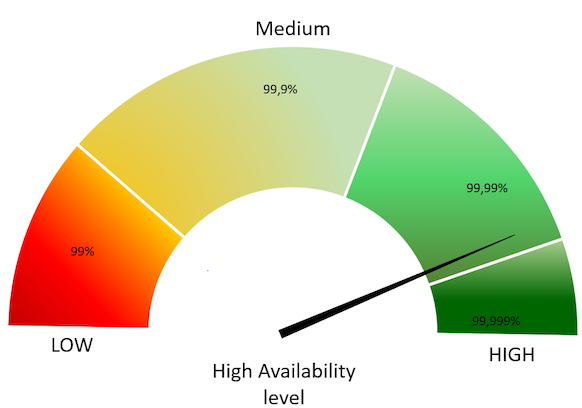
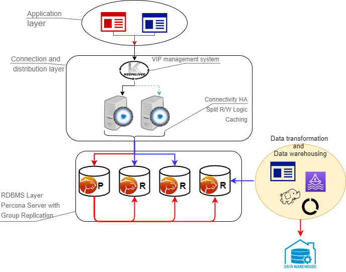
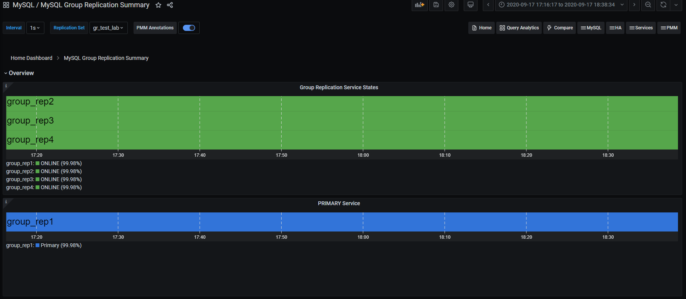
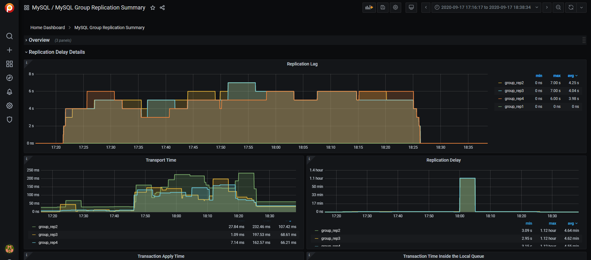
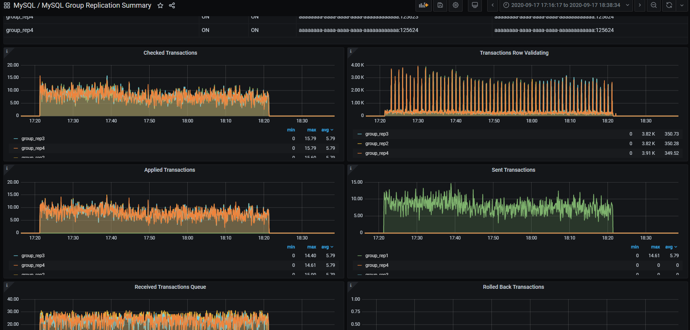
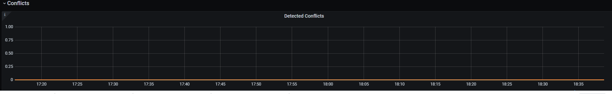

Percona Distribution for MySQL
Documentation
8.0.42 (June 16, 2025)
Percona Distribution for MySQL 8.0 Documentation¶
Percona Distribution for MySQL is a single solution with the best and most critical enterprise components from the MySQL open source community, designed and tested to work together. With Percona Server for MySQL or Percona XtraDB Cluster as the base server, the distribution brings you the enterprise-grade features for free. The set of carefully selected components helps you operate your MySQL database to meet your application and business needs.
Features¶
-
Increased stability and availability - The set of high-availability and backup options help you ensure your data is saved and available for your business applications.
-
Improved performance and efficiency - Integrated tools help DBAs maintain, manage and monitor the database performance and timely respond to changing demands.
-
Reduced costs - Save on purchasing software licensing by using the distribution - the open-source enterprise-grade solution.
-
Easy-to-integrate with PMM - Benefit from all the features of PMM for monitoring and managing the health of your database.
Percona Distribution for MySQL comes in two deployment variants: one is based on Percona Server for MySQL and another one - on Percona XtraDB Cluster. They differ in the set of components and how you can use them.
Get started¶
Follow the installation instructions to get started with Percona Distribution for MySQL.
Read more about solutions you can deploy with Percona Distribution for MySQL in solutions.
Learn more about what’s new in Percona Distribution for MySQL in the release notes.
Read more¶
Get help from Percona¶
Our documentation guides are packed with information, but they can’t cover everything you need to know about Percona Distribution for MySQL. They also won’t cover every scenario you might come across. Don’t be afraid to try things out and ask questions when you get stuck.
Percona’s Community Forum¶
Be a part of a space where you can tap into a wealth of knowledge from other database enthusiasts and experts who work with Percona’s software every day. While our service is entirely free, keep in mind that response times can vary depending on the complexity of the question. You are engaging with people who genuinely love solving database challenges.
We recommend visiting our Community Forum. It’s an excellent place for discussions, technical insights, and support around Percona database software. If you’re new and feeling a bit unsure, our FAQ and Guide for New Users ease you in.
If you have thoughts, feedback, or ideas, the community team would like to hear from you at Any ideas on how to make the forum better?. We’re always excited to connect and improve everyone’s experience.
Percona experts¶
Percona experts bring years of experience in tackling tough database performance issues and design challenges.
We understand your challenges when managing complex database environments. That’s why we offer various services to help you simplify your operations and achieve your goals.
| Service | Description |
|---|---|
| 24/7 Expert Support | Our dedicated team of database experts is available 24/7 to assist you with any database issues. We provide flexible support plans tailored to your specific needs. |
| Hands-On Database Management | Our managed services team can take over the day-to-day management of your database infrastructure, freeing up your time to focus on other priorities. |
| Expert Consulting | Our experienced consultants provide guidance on database topics like architecture design, migration planning, performance optimization, and security best practices. |
| Comprehensive Training | Our training programs help your team develop skills to manage databases effectively, offering virtual and in-person courses. |
We’re here to help you every step of the way. Whether you need a quick fix or a long-term partnership, we’re ready to provide your expertise and support.
Release notes
Release notes index¶
Percona Distribution for MySQL using Percona Server for MySQL¶
-
Percona Distribution for MySQL 8.0.42 using Percona Server for MySQL (2025-05-21)
-
Percona Distribution for MySQL 8.0.41 using Percona Server for MySQL (2025-02-26)
-
Percona Distribution for MySQL 8.0.40 using Percona Server for MySQL (2025-01-02)
-
Percona Distribution for MySQL 8.0.39 using Percona Server for MySQL (2024-10-08)
-
Percona Distribution for MySQL 8.0.38 using Percona Server for MySQL
-
Percona Distribution for MySQL 8.0.37 using Percona Server for MySQL (2024-08-06)
-
Percona Distribution for MySQL 8.0.36 using Percona Server for MySQL (2024-03-04)
-
Percona Distribution for MySQL 8.0.35 using Percona Server for MySQL (2023-12-27)
-
Percona Distribution for MySQL 8.0.34 using Percona Server for MySQL Third Update (2023-12-23)
-
Percona Distribution for MySQL 8.0.34 using Percona Server for MySQL Second Update (2023-12-21)
-
Percona Distribution for MySQL 8.0.34 using Percona Server for MySQL Update (2023-10-03)
-
Percona Distribution for MySQL 8.0.34 using Percona Server for MySQL (2023-09-26)
-
Percona Distribution for MySQL 8.0.33 using Percona Server for MySQL Third Update (2023-08-02)
-
Percona Distribution for MySQL 8.0.33 using Percona Server for MySQL Second Update (2023-07-19)
-
Percona Distribution for MySQL 8.0.33 using Percona Server for MySQL Update (2023-06-30)
-
Percona Distribution for MySQL 8.0.33 using Percona Server for MySQL (2023-06-15)
-
Percona Distribution for MySQL 8.0.32 using Percona Server for MySQL Third Update (2023-06-05)
-
Percona Distribution for MySQL 8.0.32 using Percona Server for MySQL Second Update (2023-04-04)
-
Percona Distribution for MySQL 8.0.32 using Percona Server for MySQL Update (2023-03-28)
-
Percona Distribution for MySQL 8.0.32 using Percona Server for MySQL (2023-03-20)
-
Percona Distribution for MySQL 8.0.31 using Percona Server for MySQL Update (2023-02-15)
-
Percona Distribution for MySQL 8.0.31 using Percona Server for MySQL (2023-02-09)
-
Percona Distribution for MySQL 8.0.30 using Percona Server for MySQL Second Update (2023-01-23)
-
Percona Distribution for MySQL 8.0.30 using Percona Server for MySQL Update (2023-01-06)
-
Percona Distribution for MySQL 8.0.30 using Percona Server for MySQL (2022-11-29)
-
Percona Distribution for MySQL 8.0.29 using Percona Server for MySQL (2022-08-09)
-
Percona Distribution for MySQL 8.0.28 using Percona Server for MySQL Update (2022-06-20)
-
Percona Distribution for MySQL 8.0.28 using Percona Server for MySQL (2022-05-12)
-
Percona Distribution for MySQL 8.0.27 using Percona Server for MySQL (2022-03-03)
-
Percona Distribution for MySQL 8.0.26 using Percona Server for MySQL (2021-10-20)
-
Percona Distribution for MySQL 8.0.25 using Percona Server for MySQL (2021-07-13)
-
Percona Distribution for MySQL 8.0.23 using Percona Server for MySQL (2021-05-12)
-
Percona Distribution for MySQL 8.0.22 using Percona Server for MySQL (2020-12-14)
-
Percona Distribution for MySQL 8.0.21 using Percona Server for MySQL (2020-10-13)
-
Percona Distribution for MySQL 8.0.20 using Percona Server for MySQL (2021-07-21)
Percona Distribution for MySQL using Percona XtraDB Cluster¶
-
Percona Distribution for MySQL 8.0.42 using Percona XtraDB Cluster (2025-06-16)
-
Percona Distribution for MySQL 8.0.41 using Percona XtraDB Cluster (2025-03-13)
-
Percona Distribution for MySQL 8.0.40 using Percona XtraDB Cluster (2025-01-23)
-
Percona Distribution for MySQL 8.0.39 using Percona XtraDB Cluster (2024-12-02)
-
Percona Distribution for MySQL 8.0.38 using Percona XtraDB Cluster
-
Percona Distribution for MySQL 8.0.37 using Percona XtraDB Cluster (2024-09-18)
-
Percona Distribution for MySQL 8.0.36 using Percona XtraDB Cluster (2024-04-03)
-
Percona Distribution for MySQL 8.0.35 using Percona XtraDB Cluster (2024-01-17)
-
Percona Distribution for MySQL 8.0.34 using Percona XtraDB Cluster Second Update (2023-12-23)
-
Percona Distribution for MySQL 8.0.34 using Percona XtraDB Cluster Update (2023-12-21)
-
Percona Distribution for MySQL 8.0.34 using Percona XtraDB Cluster (2023-11-01)
-
Percona Distribution for MySQL 8.0.33 using Percona XtraDB Cluster Update (2023-10-03)
-
Percona Distribution for MySQL 8.0.33 using Percona XtraDB Cluster (2023-08-02)
-
Percona Distribution for MySQL 8.0.32 using Percona XtraDB Cluster Third Update (2023-06-30)
-
Percona Distribution for MySQL 8.0.32 using Percona XtraDB Cluster Second Update (2023-06-05)
-
Percona Distribution for MySQL 8.0.32 using Percona XtraDB Cluster Update (2023-05-24)
-
Percona Distribution for MySQL 8.0.32 using Percona XtraDB Cluster (2023-04-18)
-
Percona Distribution for MySQL 8.0.31 using Percona XtraDB Cluster Second Update (2023-04-04)
-
Percona Distribution for MySQL 8.0.31 using Percona XtraDB Cluster Update (2023-03-28)
-
Percona Distribution for MySQL 8.0.31 using Percona XtraDB Cluster (2023-03-15)
-
Percona Distribution for MySQL 8.0.30 using Percona XtraDB Cluster Update (2023-01-23)
-
Percona Distribution for MySQL 8.0.30 using Percona XtraDB Cluster (2022-12-28)
-
Percona Distribution for MySQL 8.0.29 using Percona XtraDB Cluster Update (2022-12-01)
-
Percona Distribution for MySQL 8.0.29 using Percona XtraDB Cluster (2022-09-12)
-
Percona Distribution for MySQL 8.0.28 using Percona XtraDB Cluster (2022-07-19)
-
Percona Distribution for MySQL 8.0.27 using Percona XtraDB Cluster (2022-04-11)
-
Percona Distribution for MySQL 8.0.26 using Percona XtraDB Cluster (2022-01-17)
-
Percona Distribution for MySQL 8.0.25 using Percona XtraDB Cluster (2021-11-22)
-
Percona Distribution for MySQL 8.0.23 using Percona XtraDB Cluster Update (2021-09-15)
-
Percona Distribution for MySQL 8.0.23 using Percona XtraDB Cluster (2021-06-09)
-
Percona Distribution for MySQL 8.0.22 using Percona XtraDB Cluster (2021-03-22)
-
Percona Distribution for MySQL 8.0.21 using Percona XtraDB Cluster (2020-12-28)
-
Percona Distribution for MySQL 8.0.20 using Percona XtraDB Cluster Second Update (2020-10-22)
-
Percona Distribution for MySQL 8.0.20 using Percona XtraDB Cluster Update (2020-10-09)
-
Percona Distribution for MySQL 8.0.20 using Percona XtraDB Cluster (2020-10-01)
Percona Distribution for MySQL using Percona Server for MySQL
Percona Distribution for MySQL 8.0.42 using Percona Server for MySQL (2025-05-21)¶
Percona Distribution for MySQL is the most stable, scalable, and secure open source MySQL distribution, with two download options: one based on Percona Server for MySQL and one based on Percona XtraDB Cluster. Install Percona Distribution for MySQL.
This release is based on Percona Server for MySQL 8.0.42-33 that includes all the features and bug fixes available in the MySQL 8.0.42 Community Edition and enterprise-grade features developed by Percona.
Release highlights¶
Percona Server for MySQL 8.0.42-33¶
-
Improves the
audit_log_filter_set_user()UDF to accept account names with wildcard characters ('%'and'_') in the host part. For example, you can use‘usr1@%',‘usr2%192.168.0.%’, or'usr3@%.mycorp.com'. -
Updates the C++ level of the KMPI library to enhance error handling capabilities.
-
Improves optimizer behavior by restoring correct handling of const tables in
test_quick_select(). A MySQL Upstream refactor (commit 9a13c1c) removed theQEP_TABdependency, causingget_quick_record_count()to no longer pass const table information. This could lead to suboptimal range scan boundaries. The applied patch resolves the issue by explicitly passingconst_tablestotest_quick_select(), ensuring consistent behavior with the pre-refactor logic.
The latest MyRocks storage engine incorporates code based on RocksDB version 9.3.1. Percona has applied minor modifications to the original RocksDB codebase. Check the list of modifications at https://github.com/percona/rocksdb/.
This release adds the following changes to the list of MyRocks variables.
Adds new MyRocks variables
--rocksdb_bulk_load_compression_parallel_threads--rocksdb_bulk_load_enable_unique_key_check--rocksdb_debug_skip_bloom_filter_check_on_iterator_bounds--rocksdb_enable_udt_in_mem--rocksdb_invalid_create_option_action--rocksdb_io_error_action--rocksdb_table_stats_skip_system_cf--rocksdb_use_io_uring--rocksdb_enable_instant_ddl--rocksdb_enable_instant_ddl_for_append_column--rocksdb_enable_instant_ddl_for_column_default_changes--rocksdb_enable_instant_ddl_for_drop_index_changes--rocksdb_enable_instant_ddl_for_table_comment_changes--rocksdb-bulk-load-compression-parallel-threads--rocksdb-bulk-load-enable-unique-key-check--rocksdb-debug-skip-bloom-filter-check-on-iterator-bounds
Changes default values of MyRocks variables
-
--rocksdb_disable_instant_ddl- the default value is changed fromONtoOFF. -
--rocksdb_file_checksums- the data type is changed fromBooleantoENUM. Also, the default value is changed fromOFFtoCHECKSUMS_OFF. -
--rocksdb_compaction_readahead_size- the default value is changed from0(zero) to2097152.
Deprecates MyRocks variable
--rocksdb_disable_instant_ddl- this variable is being deprecated and is expected to be removed in a future release.
Removes MyRocks variables
--rocksdb-access-hint-on-compaction-start--rocksdb_large_prefix--rocksdb_strict_collation_check--rocksdb_strict_collation_exceptions
MySQL 8.0.42¶
Improvements and bug fixes provided by Oracle for MySQL 8.0.42 and included in Percona Server for MySQL are the following:
-
Fixed an issue where
CHECK TABLEsometimes incorrectly reported that spatial indexes were corrupted. (Bug #37286473) -
Fixed an issue in InnoDB redo log recovery to improve data safety after a crash. (Bug #37061960)
-
Fixed an issue where reading
index_idvalues could lead to incorrect behavior with indexes. (Bug #36993445, Bug #37709706) -
Fixed a bug related to the
lower_case_table_namessetting that caused inconsistent behavior with table names on different systems. (Bug #32288105) -
Fixed a bug where
mysqldumpdid not properly escape certain special characters in its output. (Bug #37540722, Bug #37709163) -
The
fprintf_string()function inmysqldumpdid not use the correct quote character for escaping strings. (Bug #37607195)
Find the complete list of bug fixes and changes in the MySQL 8.0.42 Release Notes.
Supplied components¶
Review each component’s release notes for What’s new, improvements, or bug fixes. The following is a list of the components supplied with the Percona Server for MySQL-based variation of the Percona Distribution for MySQL:
| Component | Version | Description |
|---|---|---|
| Orchestrator | 3.2.6-17 | The replication topology manager for Percona Server for MySQL |
| ProxySQL | 2.7.3 | A high performance, high-availability, protocol-aware proxy for MySQL |
| Percona XtraBackup | 8.0.35-33 | An open-source hot backup utility for MySQL-based servers |
| Percona Toolkit | 3.7.0-2 | The set of scripts to simplify and optimize database operation |
| MySQL Shell | 8.0.42 | An advanced client and code editor for MySQL Server |
| MySQL Router | 8.0.42 | Lightweight middleware that provides transparent routing between your application and back-end MySQL servers |
Percona Distribution for MySQL 8.0.41 using Percona Server for MySQL (2025-02-26)¶
Percona Distribution for MySQL is the most stable, scalable, and secure open source MySQL distribution, with two download options: one based on Percona Server for MySQL and one based on Percona XtraDB Cluster. Install Percona Distribution for MySQL.
This release is based on Percona Server for MySQL 8.0.41-32 that includes all the features and bug fixes available in the MySQL 8.0.41 Community Edition and enterprise-grade features developed by Percona.
Release highlights¶
Percona Server for MySQL 8.0.41-32¶
-
Extends the Encryption user-defined functions with the following:
-
Added support for
pkcs1,oaep, ornopadding for RSA encrypt and decrypt operations -
Added support for
pkcs1orpkcs1_psspadding for RSA sign and verify operations -
Added the
encryption_udf.legacy_padding_schemesystem variable to manage legacy padding schemes -
Added the character set awareness
-
-
Improves the Data masking performance by introducing an internal term cache. The new cache speeds up lookups for
gen_blocklist()andgen_dictionary()functions by storing dictionary data in memory.Find more detailed information in the Data masking overview and in the Data masking component functions.
MySQL 8.0.41¶
Improvements and bug fixes provided by Oracle for MySQL 8.0.41 and included in Percona Server for MySQL are the following:
-
Fixed an assertion in debug builds where certain IO buffer serializations caused system hangs. (Bug #37139618)
-
Resolved a failure when dropping the primary key and adding a new
AUTO_INCREMENTcolumn as the primary key in descending order using theINPLACEalgorithm resulted in failure. (Bug #36658450) -
Fixed incorrect results, including missing rows, in queries that used a descending primary key with the
index_mergeoptimization. (Bug #106207, Bug #33767814) -
Addressed a replication channel issue where MySQL failed to stop the channel properly when large transactions were being processed, and
STOP REPLICAwas requested. This issue also prevented graceful server shutdown, requiring process termination or system restart. (Bug #115966, Bug #37008345)
Find the complete list of bug fixes and changes in the MySQL 8.0.41 Release Notes.
Supplied components¶
Review each component’s release notes for What’s new, improvements, or bug fixes. The following is a list of the components supplied with the Percona Server for MySQL-based variation of the Percona Distribution for MySQL:
| Component | Version | Description |
|---|---|---|
| Orchestrator | 3.2.6-16 | The replication topology manager for Percona Server for MySQL |
| ProxySQL | 2.7.1-1 | A high performance, high-availability, protocol-aware proxy for MySQL |
| Percona XtraBackup | 8.0.35-32 | An open-source hot backup utility for MySQL-based servers |
| Percona Toolkit | 3.7.0 | The set of scripts to simplify and optimize database operation |
| MySQL Shell | 8.0.41 | An advanced client and code editor for MySQL Server |
| MySQL Router | 8.0.41 | Lightweight middleware that provides transparent routing between your application and back-end MySQL servers |
Percona Distribution for MySQL 8.0.40 using Percona Server for MySQL (2025-01-02)¶
Percona Distribution for MySQL is the most stable, scalable, and secure open source MySQL distribution, with two download options: one based on Percona Server for MySQL and one based on Percona XtraDB Cluster. Install Percona Distribution for MySQL.
This release is based on Percona Server for MySQL 8.0.40-31 that includes all the features and bug fixes available in the MySQL 8.0.40 Community Edition and enterprise-grade features developed by Percona.
Release highlights¶
Improvements and bug fixes provided by Oracle for MySQL 8.0.40 and included in Percona Server for MySQL are the following:
-
Changes in MySQL 8.0.33 caused queries using joins on InnoDB tables to perform worse because refactoring affected functions that were previously inline.
-
The server crashed when it tried to update columns altered with NULL as the default value using the INSTANT algorithm.
-
The server could crash during DELETE or UPDATE operations if a column was dropped using the INSTANT algorithm.
-
Importing a table created under a different sql_mode sometimes led to schema mismatches, risking data corruption in secondary indexes. The fix now includes integrity checks on the imported tablespace.
-
Rebuilding tables with secondary indexes required more file I/O operations compared to MySQL 8.0.26, which slowed down query performance.
Find the complete list of bug fixes and changes in the MySQL 8.0.40 Release Notes.
Supplied components¶
Review each component’s release notes for What’s new, improvements, or bug fixes. The following is a list of the components supplied with the Percona Server for MySQL-based variation of the Percona Distribution for MySQL:
| Component | Version | Description |
|---|---|---|
| Orchestrator | 3.2.6-15 | The replication topology manager for Percona Server for MySQL |
| ProxySQL | 2.7.1-1 | A high performance, high-availability, protocol-aware proxy for MySQL |
| Percona XtraBackup | 8.0.35-31 | An open-source hot backup utility for MySQL-based servers |
| Percona Toolkit | 3.7.0 | The set of scripts to simplify and optimize database operation |
| MySQL Shell | 8.0.40 | An advanced client and code editor for MySQL Server |
| MySQL Router | 8.0.40 | Lightweight middleware that provides transparent routing between your application and back-end MySQL servers |
Percona Distribution for MySQL 8.0.39 using Percona Server for MySQL (2024-10-08)¶
Percona Distribution for MySQL is the most stable, scalable, and secure open source MySQL distribution, with two download options: one based on Percona Server for MySQL and one based on Percona XtraDB Cluster. Install Percona Distribution for MySQL.
This release is based on Percona Server for MySQL 8.0.39-30 that includes all the features and bug fixes available in the MySQL 8.0.38 Community Edition and MySQL 8.0.39 Community Edition and enterprise-grade features developed by Percona.
Release highlights¶
Improvements and bug fixes provided by Oracle for MySQL 8.0.38, MySQL 8.0.39 and included in Percona Server for MySQL are the following:
-
The server could not restart successfully after creating a large number of tables (8001 or more). This issue, Bug #36808732, is a regression of Bug #33398681.
-
Enhanced performance of tablespace file scanning during startup. (Bug #110402, Bug #35200385)
-
InnoDB file system operations now consistently perform an fsync on the parent directory when carrying out directory-altering tasks. (Bug #36174938)
-
Worker jobs now include details about the relay log file that initiated the transaction, rather than relying on the default specified by
relay_log.
Find the complete list of bug fixes and changes in the MySQL 8.0.38 Release Notes and MySQL 8.0.39 Release Notes.
Supplied components¶
Review each component’s release notes for What’s new, improvements, or bug fixes. The following is a list of the components supplied with the Percona Server for MySQL-based variation of the Percona Distribution for MySQL:
| Component | Version | Description |
|---|---|---|
| Orchestrator | 3.2.6-14 | The replication topology manager for Percona Server for MySQL |
| ProxySQL | 2.6.5 | A high performance, high-availability, protocol-aware proxy for MySQL |
| Percona XtraBackup | 8.0.35-30 | An open-source hot backup utility for MySQL-based servers |
| Percona Toolkit | 3.6.0 | The set of scripts to simplify and optimize database operation |
| MySQL Shell | 8.0.38 | An advanced client and code editor for MySQL Server |
| MySQL Router | 8.0.39 | Lightweight middleware that provides transparent routing between your application and back-end MySQL servers |
Percona Distribution for MySQL 8.0.38 using Percona Server for MySQL¶
Due to a critical fix, MySQL Community Server 8.0.39 was released shortly (22 days later) after MySQL Community Server 8.0.38. Percona has skipped the release of Percona Server for MySQL 8.0.38. Percona Server for MySQL 8.0.39 contains all bug fixes and contents from MySQL Community Server 8.0.38 and MySQL Community Server 8.0.39.
Percona Distribution for MySQL 8.0.37 using Percona Server for MySQL Update (2024-08-06)¶
Percona Distribution for MySQL is the most stable, scalable, and secure open source MySQL distribution, with two download options: one based on Percona Server for MySQL and one based on Percona XtraDB Cluster. Install Percona Distribution for MySQL.
Release highlights¶
This release enhances telemetry and provides a more comprehensive explanation of how the telemetry works, including new components, metrics files, and additional methods for disabling telemetry. Find more information in the Telemetry on Percona Server for MySQL document.
Improvements and bug fixes provided by Oracle for MySQL 8.0.37 and included in Percona Server for MySQL are the following:
-
The redo log might not record a change in column order when using instant DDL, potentially leading to an inaccurate log replay during the recovery process. (Bug #35183686)
-
Enhanced management of buffers has been implemented in deleting tablespaces to prevent a possible assertion failure. (Bug #35676106, Bug #36343647)
-
Resolved an assertion failure associated with full-text indexes. (Bug #35836581)
Find the complete list of bug fixes and changes in the MySQL 8.0.37 Release Notes.
Deprecation¶
- PS-8963: The
SEQUENCE_TABLE()function is deprecated and may be removed in a future release. We recommend that you usePERCONA_SEQUENCE_TABLE()instead. To maintain compatibility with existing third-party software,SEQUENCE_TABLEis no longer a reserved term and can be used as a regular identifier. Find more information in PERCONA_SEQUENCE_TABLE(n) function
Packaging notes¶
Percona Server for MySQL 8.0.37-29 supports Ubuntu 24.04.
Supplied components¶
Review each component’s release notes for What’s new, improvements, or bug fixes. The following is a list of the components supplied with the Percona Server for MySQL-based variation of the Percona Distribution for MySQL:
| Component | Version | Description |
|---|---|---|
| Orchestrator | 3.2.6-13 | The replication topology manager for Percona Server for MySQL |
| ProxySQL | 2.6.3 | A high performance, high-availability, protocol-aware proxy for MySQL |
| Percona XtraBackup | 8.0.35-30 | An open-source hot backup utility for MySQL-based servers |
| Percona Toolkit | 3.6.0 | The set of scripts to simplify and optimize database operation |
| MySQL Shell | 8.0.37 | An advanced client and code editor for MySQL Server |
| MySQL Router | 8.0.37 | Lightweight middleware that provides transparent routing between your application and back-end MySQL servers |
Percona Distribution for MySQL 8.0.36 using Percona Server for MySQL (2024-03-04)¶
Percona Distribution for MySQL is the most stable, scalable, and secure open source MySQL distribution, with two download options: one based on Percona Server for MySQL and one based on Percona XtraDB Cluster. Install Percona Distribution for MySQL.
This release is focused on the Percona Server for MySQL-based deployment variation. It is based on Percona Server for MySQL 8.0.36-28.
Release highlights¶
This release fixes the Orchestrator issues. Find the full list of bug fixes and changes in the MySQL 8.0.36 Release Notes.
Bug fixes¶
The Orchestrator version is updated from 3.2.6-11 to 3.2.6-12. The issues fixed in Orchestrator 3.2.6-12 are the following:
-
DISTMYSQL-396: The Orchestrator failed to handle duplicate values for alias.
-
DISTMYSQL-364: The Orchestrator didn’t support group replication with Percona Server for MySQL.
-
DISTMYSQL-185: A user was receiving false errors when relocating the replicas.
-
DISTMYSQL-226: The Orchestrator incorrectly handled the
max_allowed_packetsetting.
Supplied components¶
Review each component’s release notes for What’s new, improvements, or bug fixes. The following is a list of the components supplied with the Percona Server for MySQL-based variation of the Percona Distribution for MySQL:
| Component | Version | Description |
|---|---|---|
| Orchestrator | 3.2.6-12 | The replication topology manager for Percona Server for MySQL |
| ProxySQL | 2.5.5-1.2 | A high performance, high-availability, protocol-aware proxy for MySQL |
| Percona XtraBackup | 8.0.35-30 | An open-source hot backup utility for MySQL-based servers |
| Percona Toolkit | 3.5.7 | The set of scripts to simplify and optimize database operation |
| MySQL Shell | 8.0.36 | An advanced client and code editor for MySQL Server |
| MySQL Router | 8.0.36 | Lightweight middleware that provides transparent routing between your application and back-end MySQL servers |
2023 (versions 8.0.35 to 8.0.30)
Percona Distribution for MySQL 8.0.35 using Percona Server for MySQL (2023-12-27)¶
Percona Distribution for MySQL is the most stable, scalable, and secure open source MySQL distribution, with two download options: one based on Percona Server for MySQL and one based on Percona XtraDB Cluster. Install Percona Distribution for MySQL.
This release is focused on the Percona Server for MySQL-based deployment variation. It is based on Percona Server for MySQL 8.0.35-27.
Release highlights¶
Percona Server for MySQL implements telemetry that fills in the gaps in our understanding of how you use Percona Server to improve our products. Participation in the anonymous program is optional. You can opt-out if you prefer not to share this information. Find more information in the Telemetry on Percona Server for MySQL document.
This merge fixes the following issue:
- PS-8849: The server exited with the
Assertion failure: row0mysql.cc:218:len < 256 * 256 thread.
Improvements and bug fixes provided by Oracle for MySQL 8.0.35 and included in Percona Server for MySQL are the following:
- Upgraded the linked OpenSSL library to OpenSSL 3.0.10.
- Removed the printed query string limit to display the characters for a detected deadlock section of the engine status log.
- Fixed a procession of single-character tokens by an FTS parser plugin.
Deprecations¶
The following items are deprecated in this release and using any of these items may cause a warning:
-
The
binlog_transaction_dependency_trackingserver system variable -
The
oldandnewserver system variables -
The
--character-set-client-handshakeserver variable -
INFORMATION_SCHEMA.PROCESSLISTand theSHOW PROCESSLISTcommand -
The
performance_schema_show_processlistvariable
We recommend migrating from these items as soon as possible. They can be removed in a future release.
Find the full list of bug fixes and changes in the MySQL 8.0.35 Release Notes.
Supplied components¶
Review each component’s release notes for What’s new, improvements, or bug fixes. The following is a list of the components supplied with the Percona Server for MySQL-based variation of the Percona Distribution for MySQL:
| Component | Version | Description |
|---|---|---|
| Orchestrator | 3.2.6-11 | The replication topology manager for Percona Server for MySQL |
| ProxySQL | 2.5.5 | A high performance, high-availability, protocol-aware proxy for MySQL |
| Percona XtraBackup | 8.0.35-30 | An open-source hot backup utility for MySQL-based servers |
| Percona Toolkit | 3.5.7 | The set of scripts to simplify and optimize database operation |
| MySQL Shell | 8.0.35 | An advanced client and code editor for MySQL Server |
| MySQL Router | 8.0.35 | Lightweight middleware that provides transparent routing between your application and back-end MySQL servers |
Percona Distribution for MySQL 8.0.34 using Percona Server for MySQL Third Update (2023-12-23)¶
Percona Distribution for MySQL is the most stable, scalable, and secure open-source MySQL distribution, with two download options: one based on Percona Server for MySQL and one based on Percona XtraDB Cluster.
This update to the release of Percona Distribution for MySQL using the Percona Server for MySQL includes the new version of Percona Toolkit 3.5.7.
Percona Distribution for MySQL 8.0.34 using Percona Server for MySQL Second Update (2023-12-21)¶
Percona Distribution for MySQL is the most stable, scalable, and secure open-source MySQL distribution, with two download options: one based on Percona Server for MySQL and one based on Percona XtraDB Cluster.
This update to the release of Percona Distribution for MySQL using the Percona Server for MySQL includes the new version of Percona Toolkit 3.5.6 that fixes Go security vulnerability.
Percona Distribution for MySQL 8.0.34 using Percona Server for MySQL Update (2023-10-03)¶
Percona Distribution for MySQL is the most stable, scalable, and secure open-source MySQL distribution, with two download options: one based on Percona Server for MySQL and one based on Percona XtraDB Cluster.
This update to the release of Percona Distribution for MySQL using the Percona Server for MySQL includes the new version of Percona Toolkit 3.5.5 that fixes Golang security vulnerability.
Percona Distribution for MySQL 8.0.34 using Percona Server for MySQL (2023-09-26)¶
Percona Distribution for MySQL is the most stable, scalable, and secure open source MySQL distribution, with two download options: one based on Percona Server for MySQL and one based on Percona XtraDB Cluster. Install Percona Distribution for MySQL.
This release is focused on the Percona Server for MySQL-based deployment variation. It is based on Percona Server for MySQL 8.0.34-26.
Release highlights¶
-
Percona Server for MySQL 8.0.34-26 implements the Audit Log Filter plugin. The plugin provides a set of features that you can use to monitor user activity on the selected server:
- Filter audit events based on user/connection, accessed database/table name, query content, etc. Filtering rules are in JSON format.
- Dynamically enable/disable the auditing. A server restart is not required to add or adjust existing filtering rules.
- Use filtering rules to remove sensitive data from SQL statements written to log files.
- Use filtering rules to block events matching specific criteria (for example, database/table name, user name).
- Configure filtering rules to write to audit log extra information provided via Query Attributes with each query.
- Encrypt the audit log files using AES-256 encryption. The plugin keeps a set of encryption passwords used to encrypt existing log files. External applications may use these passwords to access encrypted logs.
- Compress audit log files to reduce the storage space used by log files.
- Configure an automatic rotation and removal of log files. You can remove outdated log files based either on storage space used by log files or the age of log files.
-
Percona Server for MySQL 8.0.34-26 implements the data masking component, an improved and enchanced version of data masking plugin. The data masking component adds the following features:
- Support for multibyte character sets for random generation/masking functions
- New masking functions for IBAN, UUID, Canada SIN, and UK NIN
- New random generation functions for BAN, UUID, Canada SIN, and UK NIN
- The ability to store substitution dictionaries in the database
- The dynamic privilege
MASKING_DICTIONARIES_ADMINthat is required for dictionary manipulation operations - The automated loadable-function registration/unregistration during component installation/uninstallation
This merge fixes the following issue:
- PS-8770: The
INSTANT DDLcaused Percona Server 8.0.32 exit after upgrading from 5.7.41.
Improvements and bug fixes introduced by Oracle for MySQL 8.0.34 and included in Percona Server for MySQL are the following:
- MySQL 8.0.33 added support for the
audit_log pluginto choose which database to use to store JSON filter tables. Now, you can specify an alternative to the default system database, mysql, when running the plugin installation script. For example:
$> mysql -u root -D database_name -p < audit_log_filter_linux_install.sql
-
Adds
mysql_binlog_open(),mysql_binlog_fetch(), andmysql_binlog_close()functions to the libmysqlclient.so shared library. These functions enable developers to access a MySQL server binary log. -
For platforms on which OpenSSL libraries are bundled, the linked OpenSSL library for MySQL Server is updated from OpenSSL 1.1.1 to OpenSSL 3.0.9.
Deprecations and removals¶
-
The
mysqlpumpclient utility program is deprecated. The use of this program causes a warning. Themysqlpumpclient may be removed in future releases. The applications that depend onmysqlpumpwill usemysqldumporMySQL Shell Utilities. -
The
sync_relay_log_infoserver system variable is deprecated. Using this variable or its equivalent startup--sync-relay-log-infooption causes a warning. This variable may be removed in future releases. The applications that use this variable should be rewritten not to depend on it before the variable is removed. -
The
binlog_formatserver system variable is deprecated and may be removed in future releases. The functionality associated with this variable, which changes the binary logging format, is also deprecated.When
binlog_formatis removed, MySQL server supports only row-based binary logging. Thus, new installations should use only row-based binary logging. Migrate the existing installations that use the statement-based or mixed logging format to the row-based format.The system variables
log_bin_trust_function_creatorsandlog_statements_unsafe_for_binlogused in the context of statement-based logging are also deprecated and may be removed in future releases.Setting or selecting the values of deprecated variables causes a warning.
-
The
mysql_native_passwordauthentication plugin is deprecated and may be removed in future releases. UsingCREATE USER,ALTER USER, andSET PASSWORDoperations, insert a deprecation warning into the server error log if an account attempts to authenticate usingmysql_native_passwordas an authentication method. -
The legacy filtering mode is deprecated. New deprecation warnings are emitted for legacy audit log filtering system variables. The deprecated variables are either read-only or dynamic.
The
audit_log_policyread-only variable writes a warning message to the MySQL server error log during server startup when its value is set to any value exceptALL(default value).The
audit_log_include_accounts,audit_log_exclude_accounts,audit_log_statement_policy, andaudit_log_connection_policyare dynamic variables. Dynamic variables print a warning message based on usage:-
Passing in a
non-NULLvalue toaudit_log_include_accountsoraudit_log_exclude_accountsduring MySQL server startup writes a warning message to the server error log. -
Passing in a
non-defaultvalue toaudit_log_statement_policyoraudit_log_connection_policyduring MySQL server startup now writes a warning message to the server error log.ALLis the default value for both variables. -
Changing an existing value using
SETsyntax during a MySQL client session writes a warning message to the client log. -
Persisting a variable using
SET PERSISTsyntax during a MySQL client session writes a warning message to the client log.
-
-
The
keyring_fileandkeyring_encrypted_fileplugins are deprecated. These keyring plugins are replaced with thecomponent_keyring_fileandcomponent_keyring_encrypted_filecomponents.
Find the full list of bug fixes and changes in the MySQL 8.0.34 Release Notes.
Supplied components¶
Review each component’s release notes for What’s new, improvements, or bug fixes. The following is a list of the components supplied with the Percona Server for MySQL-based variation of the Percona Distribution for MySQL:
| Component | Version | Description |
|---|---|---|
| Orchestrator | 3.2.6-10 | The replication topology manager for Percona Server for MySQL |
| ProxySQL | 2.5.5 | A high performance, high-availability, protocol-aware proxy for MySQL |
| Percona XtraBackup | 8.0.34-29 | An open-source hot backup utility for MySQL-based servers |
| Percona Toolkit | 3.5.4 | The set of scripts to simplify and optimize database operation |
| MySQL Shell | 8.0.34 | An advanced client and code editor for MySQL Server |
| MySQL Router | 8.0.34 | Lightweight middleware that provides transparent routing between your application and back-end MySQL servers |
Percona Distribution for MySQL 8.0.33 using Percona Server for MySQL Third Update (2023-08-02)¶
Percona Distribution for MySQL is the most stable, scalable, and secure open-source MySQL distribution, with two download options: one based on Percona Server for MySQL and one based on Percona XtraDB Cluster. Install Percona Distribution for MySQL.
This update to the release of Percona Distribution for MySQL using the Percona Server for MySQL includes the fix to the security vulnerability in mysql-shell CVE-2023-38325.
Percona Distribution for MySQL 8.0.33 using Percona Server for MySQL Second Update (2023-07-19)¶
| Release date | July 19, 2023 |
|---|---|
| Install instructions | Installing Percona Distribution for MySQL |
Percona Distribution for MySQL is the most stable, scalable, and secure open-source MySQL distribution, with two download options: one based on Percona Server for MySQL and one based on Percona XtraDB Cluster.
This update to the release of Percona Distribution for MySQL using the Percona Server for MySQL includes the new version of Percona XtraBackup 8.0.33-28.
Percona Distribution for MySQL 8.0.33 using Percona Server for MySQL Update (2023-06-30)¶
| Release date | June 30, 2023 |
|---|---|
| Install instructions | Installing Percona Distribution for MySQL |
Percona Distribution for MySQL is the most stable, scalable, and secure open-source MySQL distribution, with two download options: one based on Percona Server for MySQL and one based on Percona XtraDB Cluster.
This update to the release of Percona Distribution for MySQL using the Percona Server for MySQL includes the new version of Percona Toolkit 3.5.4 that fixes Golang security vulnerability.
Percona Distribution for MySQL 8.0.33 using Percona Server for MySQL (2023-06-15)¶
| Release date | June 15, 2023 |
|---|---|
| Install instructions | Installing Percona Distribution for MySQL |
Percona Distribution for MySQL is the most stable, scalable, and secure open source MySQL distribution, with two download options: one based on Percona Server for MySQL and one based on Percona XtraDB Cluster.
This release is focused on the Percona Server for MySQL-based deployment variation. It is based on Percona Server for MySQL 8.0.33-25.
Release highlights¶
-
This release adds the following MyRocks variables:
-
rocksdb_bulk_load_use_sst_partitioner -
rocksdb_use_hyper_clock_cache -
rocksdb_converter_record_cached_length -
rocksdb_alter_table_comment_inplace -
rocksdb_charge_memory -
rocksdb_column_default_value_as_expression -
rocksdb_corrupt_data_action -
rocksdb_disable_instant_ddl -
rocksdb_enable_delete_range_for_drop_index -
rocksdb_partial_index_blind_delete -
rocksdb_protection_bytes_per_key -
rocksdb_use_write_buffer_manager -
This release adds a new MyRocks Information Schema Table
ROCKSDB_LIVE_FILES_METADATA. -
This release removes
rocksdb_instant_ddlvariable. Userocksdb_disable_instant_ddlinstead. -
This merge fixes the following issues:
-
PS-8477: The offline-mode persisted when doing
dba.rebootClusterFromCompleteOutage. -
PS-8699:
ALTER INSTANCE RELOAD TLShung with many concurrent connection attempts. We have included the upstream fix and added our fix for this issue, which significantly reduces the chances that the issue will reoccur.
Improvements and bug fixes introduced by Oracle for MySQL 8.0.33 and included in Percona Server for MySQL are the following:
-
The
INSTALL COMPONENTincludes theSETclause. TheSETclause sets the values of component system variables when installing one or several components. This reduces the inconvenience and limitations associated with assigning variable values in other ways. -
The mysqlbinlog
--start-positionaccepts values up to18446744073709551615. If the--read-from-remote-serveror--read-from-remote-sourceoption is used, the maximum is4294967295. (Bug #77818, Bug #21498994) -
Using a generated column with
DEFAULT(col_name)to specify the default value for a named column is not allowed and throws an error message. (Bug #34463652, Bug #34369580) -
Not all possible error states were reported during the binary log recovery process. (Bug #33658850)
-
User-defined collations are deprecated. The usage of the following user-defined collations causes a warning that is written to the log:
-
When
COLLATEis followed by the name of a user-defined collation in an SQL statement. -
When the name of a user-defined collation is used as the value of
collation_server,collation_database, orcollation_connection.
The support for user-defined collations will be removed in a future releases of MySQL.
Find the full list of bug fixes and changes in the MySQL 8.0.33 Release Notes.
Supplied components¶
Review each component’s release notes for What’s new, improvements, or bug fixes. The following is a list of the components supplied with the Percona Server for MySQL-based variation of the Percona Distribution for MySQL:
| Component | Version | Description |
|---|---|---|
| Orchestrator | 3.2.6-9 | The replication topology manager for Percona Server for MySQL |
| ProxySQL | 2.5.1 | A high performance, high-availability, protocol-aware proxy for MySQL |
| Percona XtraBackup | 8.0.33-27 | An open-source hot backup utility for MySQL-based servers |
| Percona Toolkit | 3.5.3 | The set of scripts to simplify and optimize database operation |
| MySQL Shell | 8.0.33 | An advanced client and code editor for MySQL Server |
| MySQL Router | 8.0.33 | Lightweight middleware that provides transparent routing between your application and back-end MySQL servers |
Percona Distribution for MySQL 8.0.32 using Percona Server for MySQL Third Update (2023-06-05)¶
| Release date | June 05, 2023 |
|---|---|
| Install instructions | Installing Percona Distribution for MySQL |
Percona Distribution for MySQL is the most stable, scalable, and secure open-source MySQL distribution, with two download options: one based on Percona Server for MySQL and one based on Percona XtraDB Cluster.
This update to the release of Percona Distribution for MySQL using the Percona Server for MySQL includes the new version of Percona Toolkit 3.5.3 that fixes several Golang security vulnerabilities.
Percona Distribution for MySQL 8.0.32 using Percona Server for MySQL Second Update (2023-04-04)¶
| Release date | April 04, 2023 |
|---|---|
| Install instructions | Installing Percona Distribution for MySQL |
Percona Distribution for MySQL is the most stable, scalable, and secure open-source MySQL distribution, with two download options: one based on Percona Server for MySQL and one based on Percona XtraDB Cluster.
This update to the release of Percona Distribution for MySQL using the Percona Server for MySQL includes the fix to the security vulnerability CVE-2022-25834 with PXB-2977.
Percona Distribution for MySQL 8.0.32 using Percona Server for MySQL Update (2023-03-28)¶
| Release date | March 28, 2023 |
|---|---|
| Install instructions | Installing Percona Distribution for MySQL |
Percona Distribution for MySQL is the most stable, scalable, and secure open-source MySQL distribution, with two download options: one based on Percona Server for MySQL and one based on Percona XtraDB Cluster.
This update to the release of Percona Distribution for MySQL using the Percona Server for MySQL includes the new version of Percona Toolkit 3.5.2 that upgrades Golang to 1.20 version to fix several Golang security vulnerabilities.
Percona Distribution for MySQL 8.0.32 using Percona Server for MySQL (2023-03-20)¶
| Release date | March 20, 2023 |
|---|---|
| Install instructions | Installing Percona Distribution for MySQL |
Percona Distribution for MySQL is the most stable, scalable, and secure open-source MySQL distribution, with two download options: one based on Percona Server for MySQL and one based on Percona XtraDB Cluster.
This release is focused on the Percona Server for MySQL-based deployment variation. It is based on Percona Server for MySQL 8.0.32-24.
Release highlights¶
Percona decided to revert the following MySQL bug fix:
The data and the GTIDs backed up by mysqldump were inconsistent when the options --single-transaction and --set-gtid-purged=ON were both used. It was because in between the transaction started by mysqldump and the fetching of GTID_EXECUTED, GTIDs on the server could have increased already. With this fixed, a FLUSH TABLES WITH READ LOCK is performed before the fetching of GTID_EXECUTED to ensure its value is consistent with the snapshot taken by mysqldump.
The MySQL fix also added a requirement when using –single-transaction and executing FLUSH TABLES WITH READ LOCK for the RELOAD privilege. (Bug #33630199, Bug #105761)
The current Percona decision also provides a solution for MySQL bug #33630199.
The Percona Server version of the mysqldump utility, in some modes, can be used with MySQL Server. This utility provides a temporary workaround for the additional RELOAD privilege limitation introduced by Oracle MySQL Server 8.0.32.
Improvements and bug fixes introduced by Oracle for MySQL 8.0.32 and included in Percona Server for MySQL are the following:
-
A replica can add a Generated Invisible Primary Keys(GIPK) to any InnoDB table. To achieve this behavior, the
GENERATEvalue is added as a possible value for theCHANGE REPLICATION SOURCE TOstatement’sREQUIRE_TABLE_PRIMARY_KEY_CHECKoption. -
The
REQUIRE_TABLE_PRIMARY_KEY_CHECK = GENERATEoption can be used on a per-channel basis. -
Setting
sql_generate_invisible_primary_keyon the source is ignored by a replica because this variable is not replicated. This behavior is inherited from the previous releases. -
An upgrade from 8.0.28 caused undetectable problems, such as server exit and corruption.
-
A fix for after an upgrade, all columns added with
ALGORITHM=INSTANTmaterialized and have version=0 for any new row inserted. Now, a column added withALGORITHM=INSTANTfails if the maximum possible size of a row exceeds the row size limit so that all new rows with materializedALGORITHM=INSTANTcolumns are within the row size limit. (Bug #34558510) -
After a drop, adding a specific column using the
INSTANTalgorithm could cause a data error and a server exit. (Bug #34122122) -
An online rebuild DDL no longer crashes after a column is added with
ALGORITHM=INSTANT. Thank you, Qingda Hu, for reporting this bug. (Bug #33788578, Bug #106279)
Find the full list of bug fixes and changes in the MySQL 8.0.32 Release Notes.
Supplied components¶
Review each component’s release notes for What’s new, improvements, or bug fixes. The following is a list of the components supplied with the Percona Server for MySQL-based variation of the Percona Distribution for MySQL:
| Component | Version | Description |
|---|---|---|
| Orchestrator | 3.2.6-8 | The replication topology manager for Percona Server for MySQL |
| ProxySQL | 2.4.8 | A high performance, high-availability, protocol-aware proxy for MySQL |
| Percona XtraBackup | 8.0.32-25 | An open-source hot backup utility for MySQL-based servers |
| Percona Toolkit | 3.5.1 | The set of scripts to simplify and optimize database operation |
| MySQL Shell | 8.0.32 | An advanced client and code editor for MySQL Server |
| MySQL Router | 8.0.32 | Lightweight middleware that provides transparent routing between your application and back-end MySQL servers |
Percona Distribution for MySQL 8.0.31 using Percona Server for MySQL Update (2023-02-15)¶
| Release date | February 15, 2023 |
|---|---|
| Installation | Installing Percona Distribution for MySQL |
Percona Distribution for MySQL is the most stable, scalable and secure open-source MySQL distribution, with two download options: one based on Percona Server for MySQL and one based on Percona XtraDB Cluster.
This update to the release of Percona Distribution for MySQL using the Percona Server for MySQL includes a new version of ProxySQL component 2.4.7.
Percona Distribution for MySQL 8.0.31 using Percona Server for MySQL (2023-02-09)¶
| Release date | February 9, 2023 |
|---|---|
| Install instructions | Installing Percona Distribution for MySQL |
Percona Distribution for MySQL is the most stable, scalable and secure open-source MySQL distribution, with two download options: one based on Percona Server for MySQL and one based on Percona XtraDB Cluster.
This release is focused on the Percona Server for MySQL-based deployment variation. It is based on Percona Server for MySQL 8.0.31-23.
Release highlights¶
Improvements and bug fixes introduced by Oracle for MySQL 8.0.31 and included in Percona Server for MySQL are the following:
-
A replica can add a Generated Invisible Primary Keys(GIPK) to any InnoDB table. To achieve this behavior, the
GENERATEvalue is added as a possible value for theCHANGE REPLICATION SOURCE TOstatement’sREQUIRE_TABLE_PRIMARY_KEY_CHECKoption.REQUIRE_TABLE_PRIMARY_KEY_CHECK = GENERATEoption can be used on a per-channel basis.Setting
sql_generate_invisible_primary_keyon the source is ignored by a replica because this variable is not replicated. This behavior is inherited from the previous releases. -
MySQL adds support for the SQL standard
INTERSECTandEXCEPTtable operators. -
InnoDB supports parallel index builds. This improves index build performance. The sorted index entries are loaded into a B-tree in a multithread. In previous releases, this action was performed by a single thread.
-
The Performance and sys schemas show metrics for the global and session memory limits introduced in MySQL 8.0.28.
The following columns have been added to the Performance Schema tables:
Performance Schema tables Columns SETUP_INSTRUMENTS FLAGS THREADS CONTROLLED_MEMORY, MAX_CONTROLLED_MEMORY, TOTAL_MEMORY, MAX_TOTAL_MEMORY EVENTS_STATEMENTS_CURRENT, EVENTS_STATEMENTS_HISTORY, EVENTS_STATEMENTS_HISTORY_LONG MAX_CONTROLLED_MEMORY, MAX_TOTAL_MEMORY Statement Summary Tables MAX_CONTROLLED_MEMORY, MAX_TOTAL_MEMORY Performance Schema Connection Tables MAX_SESSION_CONTROLLED_MEMORY, MAX_SESSION_TOTAL_MEMORY PREPARED_STATEMENTS_INSTANCES MAX_CONTROLLED_MEMORY, MAX_TOTAL_MEMORY The following columns have been added to the sys schema
STATEMENT_ANALYSISandX$STATEMENT_ANALYSISviews:-
MAX_CONTROLLED_MEMORY
-
MAX_TOTAL_MEMORY
The
controlled_by_defaultflag has been added to thePROPERTIEScolumn of theSETUP_INSTRUMENTStable.Now, you can add and remove non-global memory instruments to the set of controlled-memory instruments. To do this, set the value of the
FLAGScolumn ofSETUP_INSTRUMENTS.SQL> UPDATE PERFORMANCE_SCHEMA.SETUP_INTRUMENTS SET FLAGS="controlled" WHERE NAME='memory/sql/NET::buff'; -
-
The
audit_log_flushvariable has been deprecated and will be removed in future releases.
Find the full list of bug fixes and changes in the MySQL 8.0.31 Release Notes.
Supplied components¶
Review each component’s release notes for What’s new, improvements, or bug fixes. The following is a list of the components supplied with the Percona Server for MySQL-based variation of the Percona Distribution for MySQL:
| Component | Version | Description |
|---|---|---|
| Orchestrator | 3.2.6-7 | The replication topology manager for Percona Server for MySQL |
| ProxySQL | 2.4.4-1.2 | A high performance, high-availability, protocol-aware proxy for MySQL |
| Percona XtraBackup | 8.0.31-24 | An open-source hot backup utility for MySQL-based servers |
| Percona Toolkit | 3.5.1 | The set of scripts to simplify and optimize database operation |
| MySQL Shell | 8.0.31 | An advanced client and code editor for MySQL Server |
| MySQL Router | 8.0.31 | Lightweight middleware that provides transparent routing between your application and back-end MySQL servers |
Percona Distribution for MySQL 8.0.30 using Percona Server for MySQL Second Update (2023-01-23)¶
| Release date | January 23, 2023 |
|---|---|
| Installation | Installing Percona Distribution for MySQL |
Percona Distribution for MySQL is a single solution with the most critical enterprise components from the MySQL open source community, designed and tested to work together.
Percona Distribution for MySQL provides two deployment variants: one is based on Percona Server for MySQL and another one is based on Percona XtraDB Cluster.
This update to the release of Percona Distribution for MySQL using the Percona Server for MySQL includes a new version of Percona Toolkit 3.5.1 that fixes the security vulnerability CVE-2022-32149.
Percona Distribution for MySQL 8.0.30 using Percona Server for MySQL Update (2023-01-06)¶
| Release date | January 6, 2023 |
|---|---|
| Installation | Installing Percona Distribution for MySQL |
Percona Distribution for MySQL is a single solution with the most critical enterprise components from the MySQL open source community, designed and tested to work together.
Percona Distribution for MySQL provides two deployment variants: one is based on Percona Server for MySQL and another one is based on Percona XtraDB Cluster.
This update to the release of Percona Distribution for MySQL using the Percona Server for MySQL includes a new version of setuptools 65.6.3 in mysql-shell packages. With that, it fixes the security vulnerability CVE-2022-40897.
2022 (versions 8.0.30 to 8.0.27)
Percona Distribution for MySQL 8.0.30 using Percona Server for MySQL (2022-11-29)¶
| Release date | November 29, 2022 |
|---|---|
| Installation | Installing Percona Distribution for MySQL |
Percona Distribution for MySQL is a single solution with the best and most critical enterprise components from the MySQL open-source community, designed and tested to work together.
Percona Distribution for MySQL provides two deployment variants: one is based on Percona Server for MySQL and another one is based on Percona XtraDB Cluster.
This release is focused on the Percona Server for MySQL-based deployment variant. It is based on Percona Server for MySQL 8.0.30-22.
Release Highlights¶
The following features are Generally Available (GA):
The following features, variables, or options are available only in tech preview:
-
Fallback server variables for simple LDAP and SASL-based LDAP
-
Group Replication options
Improvements and bug fixes introduced by Oracle for MySQL 8.0.30 and included in Percona Server for MySQL are the following:
-
Support of Generated Invisible Primary Keys(GIPK). This feature automatically adds a primary key to InnoDB tables without a primary key. The generated key is always named
my_row_id. The GIPK feature is not enabled by default. Enable the feature by settingsql_generate_invisible_primary_keyto ON. -
Added two new settings to the InnoDB_doublewrite system:
-
DETECT_ONLY. This setting allows only metadata to be written to the doublewrite buffer. Database page content is not written to the buffer. Recovery does not use the buffer to fix incomplete page writes. Use this setting only when you need to detect incomplete page writes. -
DETECT_AND_RECOVER. This setting is equivalent to the current ON setting. The doublewrite buffer is enabled. Database page content is written to the buffer and the buffer is accessed to fix incomplete page writes during recovery. -
The
-skip_host_cacheserver option is deprecated and will be removed in a future release. UseSET GLOBAL host_cache_size= 0 or sethost_cache_size= 0.
Find the full list of bug fixes and changes in the MySQL 8.0.30 Release Notes.
The following is the list of components supplied with Percona Server for MySQL-based deployment variant of Percona Distribution for MySQL:
| Component | Version | Description |
|---|---|---|
| Orchestrator | 3.2.6-6 | The replication topology manager for Percona Server for MySQL |
| ProxySQL | 2.4.4-1.2 | A high performance, high-availability, protocol-aware proxy for MySQL |
| Percona XtraBackup | 8.0.30-23 | An open-source hot backup utility for MySQL-based servers |
| Percona Toolkit | 3.5.0 | The set of scripts to simplify and optimize database operation |
| MySQL Shell | 8.0.30 | An advanced client and code editor for MySQL Server |
| MySQL Router | 8.0.30 | Lightweight middleware that provides transparent routing between your application and back-end MySQL servers |
Packaging notes¶
Percona Distribution for MySQL 8.0.30 using Percona Server for MySQL is available on Ubuntu 22.04 (jammy).
Percona Distribution for MySQL 8.0.29 using Percona Server for MySQL (2022-08-09)¶
| Release date | August 8, 2022 |
|---|---|
| Installation | Installing Percona Distribution for MySQL |
Percona Distribution for MySQL is a single solution with the best and most critical enterprise components from the MySQL open-source community, designed and tested to work together.
Percona Distribution for MySQL provides two deployment variants: one is based on Percona Server for MySQL and another one is based on Percona XtraDB Cluster.
This release is focused on the Percona Server for MySQL-based deployment variant. It is based on Percona Server for MySQL 8.0.29-21.
Release Highlights¶
The following lists a number of the bug fixes for MySQL 8.0.29, provided by Oracle, and included in Percona Server for MySQL and Percona Distribution for MySQL:
- The Performance Schema tracks if a query was processed on the PRIMARY engine, InnoDB, or a SECONDARY engine, HeatWave. An EXECUTION_ENGINE column, which indicates the engine used, was added to the Performance Schema statement event tables and the
sys.processlistand thesys.x$processlistviews. - Added support for the
IF NOT EXISTSoption for theCREATE FUNCTION,CREATE PROCEDURE, andCREATE TRIGGERstatements. - Added support for
ALTER TABLE ... DROP COLUMN ALGORITHM=INSTANT. - An anonymous user with the
PROCESSprivilege was unable to selectprocesslisttable rows.
Find the full list of bug fixes and changes in the MySQL 8.0.29 Release Notes.
Note
Percona Server for MySQL has changed the default for supported DDL column operations to ALGORITHM=INPLACE. This fixes corruption issue and several other issues with the INSTANT ADD/DROP COLUMN DDL (Find more details in PS-8292, PS-8291 and PS-8303).
In MySQL 8.0.29, the default setting for supported DDL operations is ALGORITHM=INSTANT. You can explicitly specify ALGORITHM=INSTANT in DDL column operations.
For more information, see Percona Blog: Percona XtraBackup 8.0.29 and INSTANT ADD/DROP Columns.
Orchestrator¶
- DISTMYSQL-198: orchestrator client packages were missing for RPM based distributions. Starting from v8.0.29 they are now built and available for download.
- DISTMYSQL-197: Option
--versionnow returns a more understandable version number (in addition to the commit hash).
Packaging Notes¶
Debian 9 (“Stretch”) is no longer supported. To learn more, see Percona Blog: OS Platform End of Life (EOL) Announcement for Debian Linux 9
The following is the list of components supplied with Percona Server for MySQL-based deployment variant of Percona Distribution for MySQL:
| Component | Version | Description |
|---|---|---|
| Orchestrator | 3.2.6-3 | The replication topology manager for Percona Server for MySQL |
| ProxySQL | 2.3.2 | A high performance, high-availability, protocol-aware proxy for MySQL |
| Percona XtraBackup | 8.0.29-22 | An open-source hot backup utility for MySQL-based servers |
| Percona Toolkit | 3.4.0 | The set of scripts to simplify and optimize database operation |
| MySQL Shell | 8.0.29 | An advanced client and code editor for MySQL Server |
| MySQL Router | 8.0.29 | Lightweight middleware that provides transparent routing between your application and back-end MySQL servers |
Percona Distribution for MySQL 8.0.28 using Percona Server for MySQL Update (2022-06-20)¶
| Release date | June 20, 2022 |
|---|---|
| Installation | Installing Percona Distribution for MySQL |
Percona Distribution for MySQL is a single solution with the best and most critical enterprise components from the MySQL open-source community, designed and tested to work together.
This update of Percona Distribution for MySQL using Percona Server for MySQL is based on Percona Server for MySQL 8.0.28-20.
It also includes the updated version of Percona XtranBackup 8.0.28-21.
Release Highlights¶
-
Encryption functions and variables to manage the encryption range are added. The functions may take an algorithm argument. Encryption converts plaintext into ciphertext using a key and an encryption algorithm.
You can also use the user-defined functions with the PEM format keys generated externally by the OpenSSL utility.
-
Support for the Amazon Key Management Service (AWS KMS) component.
-
Error messages are now logged to a memory buffer.
-
ZenFS file system plugin for RocksDB is updated to version 2.1.0.
-
Memory leak and errors detectors (Valgrind or AddressSanitizer) provide detailed stack traces from dynamic libraries (plugins and components). The detailed stack traces make it easier to identify and fix the issues.
Other components, supplied with Percona Distribution for MySQL, remain unchanged.
Percona Distribution for MySQL 8.0.28 using Percona Server for MySQL (2022-05-12)¶
| Release date | May 12, 2022 |
|---|---|
| Installation | Installing Percona Distribution for MySQL |
Percona Distribution for MySQL is a single solution with the best and most critical enterprise components from the MySQL open-source community, designed and tested to work together.
Percona Distribution for MySQL provides two deployment variants: one is based on Percona Server for MySQL and another one is based on Percona XtraDB Cluster.
This release of Percona Distribution for MySQL is focused on the Percona Server for MySQL-based deployment variant. It is based on Percona Server for MySQL 8.0.28-19.
Release Highlights¶
The following lists a number of the bug fixes for MySQL 8.0.28, provided by Oracle, and included in Percona Server for MySQL and Percona Distribution for MySQL:
-
The
ASCIIshortcut forCHARACTER SET latin1andUNICODEshortcut forCHARACTER SET ucs2are deprecated and raise a warning to useCHARACTER SETinstead. The shortcuts will be removed in a future version. -
A stored function and a loadable function with the same name can share the same namespace. Add the schema name when invoking a stored function in the shared namespace. The server generates a warning when function names collide.
-
InnoDB supports
ALTER TABLE ... RENAME COLUMNoperations when usingALGORITHM=INSTANT. -
The limit for
innodb_open_filesnow includes temporary tablespace files. The temporary tablespace files were not counted in theinnodb_open_filesin previous versions.
Find the full list of bug fixes and changes in the MySQL 8.0.28 Release Notes.
Orchestrator¶
DISTMYSQL-141: In complicated environments, such as 3 or more datacenters, or when each server has more than 2 intermediary masters, Orchestrator could miss replication delays in one or more datacenters. This was happening due to a hard-coded limitation of two intermediary masters to check for the replication delay. This is now fixed.
The following is the list of components supplied with Percona Server for MySQL-based deployment variant of Percona Distribution for MySQL:
| Component | Version | Description |
|---|---|---|
| Orchestrator | 3.2.6 | The replication topology manager for Percona Server for MySQL |
| ProxySQL | 2.3.2 | A high performance, high-availability, protocol-aware proxy for MySQL |
| Percona XtraBackup | 8.0.28-20.0 | An open-source hot backup utility for MySQL-based servers |
| Percona Toolkit | 3.3.1 | The set of scripts to simplify and optimize database operation |
| MySQL Shell | 8.0.28 | An advanced client and code editor for MySQL Server |
| MySQL Router | 8.0.28 | Lightweight middleware that provides transparent routing between your application and back-end MySQL servers |
Percona Distribution for MySQL 8.0.27 using Percona Server for MySQL (2022-03-03)¶
| Release date | March 03, 2022 |
|---|---|
| Installation | Installing Percona Distribution for MySQL |
Percona Distribution for MySQL is a single solution with the best and most critical enterprise components from the MySQL open-source community, designed and tested to work together.
Percona Distribution for MySQL provides two deployment variants: one is based on Percona Server for MySQL and another one is based on Percona XtraDB Cluster.
This release of Percona Distribution for MySQL is focused on the Percona Server for MySQL-based deployment variant. It is based on Percona Server for MySQL 8.0.27-18.
Release Highlights¶
The following list are some of the bug fixes for MySQL 8.0.27, provided by Oracle, and included in Percona Server for MySQL and Percona Distribution for MySQL:
-
The
default_authentication_pluginis deprecated. Support for this plugin may be removed in future versions. Use theauthentication_policyvariable. -
The
binaryoperator is deprecated. Support for this operator may be removed in future versions. UseCAST(... AS BINARY). -
Fix for when a parent table initiates a cascading
SET NULLoperation on the child table, the virtual column can be set to NULL instead of the value derived from the parent table.
Packaging Notes¶
- Red Hat Enterprise Linux 6 (and derivative Linux distributions) are no longer supported.
Known issues¶
The RPM packages for Red Hat Enterprise Linux 7 (and compatible derivatives) do not support TLSv1.3, as it requires OpenSSL 1.1.1, which is currently not available on this platform.
The following is the list of components supplied with Percona Server for MySQL-based deployment variant of Percona Distribution for MySQL:
| Component | Version | Description |
|---|---|---|
| Orchestrator | 3.2.6 | The replication topology manager for Percona Server for MySQL |
| ProxySQL | 2.3.2 | A high performance, high-availability, protocol-aware proxy for MySQL |
| Percona XtraBackup | 8.0.27-17.0 | An open-source hot backup utility for MySQL-based servers |
| Percona Toolkit | 3.3.1 | The set of scripts to simplify and optimize database operation |
| MySQL Shell | 8.0.27 | An advanced client and code editor for MySQL Server |
| MySQL Router | 8.0.27 | Lightweight middleware that provides transparent routing between your application and back-end MySQL servers |
2021 (versions 8.0.26 to 8.0.23)
Percona Distribution for MySQL 8.0.26 using Percona Server for MySQL (2021-10-20)¶
| Release date | October 20, 2021 |
|---|---|
| Installation | Installing Percona Distribution for MySQL |
Percona Distribution for MySQL is a single solution with the best and most critical enterprise components from the MySQL open-source community, designed and tested to work together.
Percona Distribution for MySQL provides two deployment variants: one is based on Percona Server for MySQL and another one is based on Percona XtraDB Cluster.
This release of Percona Distribution for MySQL is focused on the Percona Server for MySQL-based deployment variant. It is based on Percona Server for MySQL 8.0.26-16.
Release Highlights¶
The TokuDB Storage Engine has been declared deprecated starting with Percona Server for MySQL 8.0.26-16. The plugins are available in the binary builds and packages but are disabled. New options have been added to enable the plugins if they are needed to migrate the data to another storage engine. Read more in the TokuDB documentation.
The following is the list of bug fixes for MySQL 8.0.26, provided by Oracle, and included in Percona Server for MySQL and Percona Distribution for MySQL:
-
#104575: In the PERFORMANCE_SCHEMA.Threads table, the
srv_purge_threadandsrv_worker_threadvalues are duplicated. -
#104387: When using REGEX comparison, a CHARACTER_SET_MISMATCH error is thrown.
-
#104576: Accessing the second index in a partition table with many columns can create a high CPU load.
The following is the list of components supplied with Percona Server for MySQL-based deployment variant of Percona Distribution for MySQL:
| Component | Version | Description |
|---|---|---|
| Orchestrator | 3.2.5 | The replication topology manager for Percona Server for MySQL |
| ProxySQL | 2.2.0 | A high performance, high-availability, protocol-aware proxy for MySQL |
| Percona XtraBackup | 8.0.26-17.0 | An open-source hot backup utility for MySQL-based servers |
| Percona Toolkit | 3.3.1 | The set of scripts to simplify and optimize database operation |
| MySQL Shell | 8.0.26 | An advanced client and code editor for MySQL Server |
| MySQL Router | 8.0.26 | Lightweight middleware that provides transparent routing between your application and back-end MySQL servers |
Percona Distribution for MySQL 8.0.25 using Percona Server for MySQL (2021-07-13)¶
| Release date | July 13, 2021 |
|---|---|
| Installation | Installing Percona Distribution for MySQL |
Percona Distribution for MySQL is a single solution with the best and most critical enterprise components from the MySQL open source community, designed and tested to work together.
Percona Distribution for MySQL provides two deployment variants: one is based on Percona Server for MySQL and another one is based on Percona XtraDB Cluster.
This release of Percona Distribution for MySQL is focused on the Percona Server for MySQL-based deployment variant. It is based on Percona Server for MySQL 8.0.25-15 and includes the following components:
| Component | Version | Description |
|---|---|---|
| Orchestrator | 3.2.5 | The replication topology manager for Percona Server for MySQL |
| ProxySQL | 2.1.1 | A high performance, high-availability, protocol-aware proxy for MySQL |
| Percona XtraBackup | 8.0.25-17.0 | An open-source hot backup utility for MySQL-based servers |
| Percona Toolkit | 3.3.1 | The set of scripts to simplify and optimize database operation |
| MySQL Shell | 8.0.25 | An advanced client and code editor for MySQL Server |
| MySQL Router | 8.0.25 | Lightweight middleware that provides transparent routing between your application and back-end MySQL servers |
Percona Distribution for MySQL 8.0.23 using Percona Server for MySQL (2021-05-12)¶
| Release date | May 12, 2021 |
|---|---|
| Installation | Installing Percona Distribution for MySQL |
Percona Distribution for MySQL is a single solution with the best and most critical enterprise components from the MySQL open source community, designed and tested to work together.
Percona Distribution for MySQL provides two deployment variants: one is based on Percona Server for MySQL and another one is based on Percona XtraDB Cluster.
This release of Percona Distribution for MySQL is focused on the Percona Server for MySQL-based deployment variant. It is based on Percona Server for MySQL 8.0.23-14 and includes the following components:
| Component | Version | Description |
|---|---|---|
| Orchestrator | 3.2.4 | The replication topology manager for Percona Server for MySQL |
| ProxySQL | 2.0.18 | A high performance, high-availability, protocol-aware proxy for MySQL |
| Percona XtraBackup | 8.0.23-16.0 | An open-source hot backup utility for MySQL-based servers |
| Percona Toolkit | 3.3.1 | The set of scripts to simplify and optimize database operation |
| MySQL Shell | 8.0.23 | An advanced client and code editor for MySQL Server |
| MySQL Router | 8.0.23 | Lightweight middleware that provides transparent routing between your application and back-end MySQL servers |
2020 (versions 8.0.22 to 8.0.19)
Percona Distribution for MySQL 8.0.22 using Percona Server for MySQL (2020-12-14)¶
| Release date | December 14, 2020 |
|---|---|
| Installation | Installing Percona Distribution for MySQL |
Percona Distribution for MySQL is a single solution with the best and most critical enterprise components from the MySQL open source community, designed and tested to work together.
Percona Distribution for MySQL provides two deployment variants: one is based on Percona Server for MySQL and another one is based on Percona XtraDB Cluster. This enables you to choose the MySQL deployment approach that best meets your specific needs. Each variant is available via its own repository and includes the base server (Percona Server for MySQL or Percona XtraDB Cluster) and compatible components.
This release of Percona Distribution for MySQL is focused on the Percona Server for MySQL-based deployment variant and is based on Percona Server for MySQL 8.0.22-13.
Percona Distribution for MySQL 8.0.21 using Percona Server for MySQL (2020-10-13)¶
| Release date | October 13, 2020 |
|---|---|
| Installation | Installing Percona Distribution for MySQL |
Percona Distribution for MySQL is a single solution with the best and most critical enterprise components from the MySQL open source community, designed and tested to work together.
Percona Distribution for MySQL provides two deployment variants: one is based on Percona Server for MySQL and another one is based on Percona XtraDB Cluster. This enables you to choose the MySQL deployment approach that best meets your specific needs. Each variant is available via its own repository and includes the base server (Percona Server for MySQL or Percona XtraDB Cluster) and compatible components.
This release of Percona Distribution for MySQL fixes the security vulnerability CVE-2020-26542. It is focused on the Percona Server for MySQL-based deployment variant and is based on Percona Server for MySQL 8.0.21-12.
Percona Distribution for MySQL 8.0.20 using Percona Server for MySQL (2020-07-21)¶
| Release date | July 21, 2020 |
|---|---|
| Installation | Installing Percona Distribution for MySQL |
Percona Distribution for MySQL is a single solution with the best and most critical enterprise components from the MySQL open source community, designed and tested to work together.
Percona Distribution for MySQL provides two deployment variants: one is based on Percona Server for MySQL and another one is based on Percona XtraDB Cluster. This enables you to choose the MySQL deployment approach that best meets your specific needs. Each variant is available via its own repository and includes the base server (Percona Server for MySQL or Percona XtraDB Cluster) and compatible components.
This release of Percona Distribution for MySQL is focused on the Percona Server for MySQL-based deployment variant and is based on Percona Server for MySQL 8.0.20-11.
Percona Distribution for MySQL 8.0.19 (2020-06-22)¶
| Release date | June 22, 2020 |
|---|---|
| Installation | Installing Percona Distribution for MySQL |
Percona Distribution for MySQL is a single solution with the best and most critical enterprise components from the MySQL open source community, designed and tested to work together. By leveraging the distribution, you get the exact combination of software and tools required to successfully deploy, run and operate your MySQL databases to meet your application and business needs.
Percona Distribution for MySQL consists of the following components:
-
Percona Server for MySQL is a drop-in replacement for MySQL Community Edition with the enterprise-grade features embedded by Percona.
-
Percona XtraDB Cluster is the high-available clustering solution for MySQL. It is based on Percona Server for MySQL and uses Percona XtraBackup for node provisioning.
-
Percona XtraBackup is an open-source hot backup utility for MySQL-based servers that doesn’t lock your database during the backup.
-
Orchestrator is the replication topology manager for Percona Server for MySQL.
-
HAProxy is the default high-availability and load-balancing solution for Percona XtraDB Cluster.
-
ProxySQL is a high performance, high-availability, protocol-aware proxy for MySQL.
-
Percona Toolkit is the set of scripts to simplify and optimize database operation.
-
MySQL Shell is an advanced client and code editor for MySQL Server.
-
MySQL Router is lightweight middleware that provides transparent routing between your application and back-end MySQL Servers.
Percona Distribution for MySQL provides two deployment variants: one is Percona Server for MySQL-based and another one is Percona XtraDB Cluster-based. This enables you to build MySQL ecosystem that meets your specific needs. Each variant is available via its own repository and includes the base server (Percona Server for MySQL or Percona XtraDB Cluster) and compatible components.
This release of Percona Distribution for MySQL is based on Percona Server for MySQL 8.0.19 and Percona XtraDB Cluster 8.0.19.
Percona Distribution for MySQL using Percona XtraDB Cluster
Percona Distribution for MySQL 8.0.42 using Percona XtraDB Cluster (2025-06-16)¶
Percona Distribution for MySQL is more than just a version of MySQL; it is a comprehensive solution that combines Percona Server for MySQL with additional tools to create a cohesive environment. This distribution is reliable, scalable, and secure, ensuring that all components have been tested to work seamlessly together. You can choose from two download options: one that uses Percona Server for MySQL and another that utilizes Percona XtraDB Cluster. Refer to Install Percona Distribution for MySQL.
This release is focused on the Percona XtraDB Cluster-based deployment variation. It is based on Percona XtraDB Cluster 8.0.42-33.
Release highlights¶
Percona XtraDB Cluster is based on Percona Server for MySQL. Find a complete list of improvements and bug fixes in the Percona Server for MySQL 8.0.42-33 (2025-05-19) release notes.
Percona XtraDB Cluster 8.0.42-33¶
Improves State Snapshot Transfer (SST) failure diagnostics. garbd now uses distinct exit codes to differentiate between donor exit, SST script failure, and garbd-initiated termination, making SST issues easier to identify and debug.
Percona Server for MySQL 8.0.42-33¶
-
Improves the
audit_log_filter_set_user()UDF to accept account names with wildcard characters ('%'and'_') in the host part. For example, you can use‘usr1@%',‘usr2%192.168.0.%’, or'usr3@%.mycorp.com'. -
Updates the C++ level of the KMPI library to enhance error handling capabilities.
-
Improves optimizer behavior by restoring correct handling of const tables in
test_quick_select(). A MySQL Upstream refactor (commit 9a13c1c) removed theQEP_TABdependency, causingget_quick_record_count()to no longer pass const table information. This could lead to suboptimal range scan boundaries. The applied patch resolves the issue by explicitly passingconst_tablestotest_quick_select(), ensuring consistent behavior with the pre-refactor logic.
The latest MyRocks storage engine incorporates code based on RocksDB version 9.3.1. Percona has applied minor modifications to the original RocksDB codebase. Check the list of modifications at https://github.com/percona/rocksdb/.
This release adds the following changes to the list of MyRocks variables.
Adds new MyRocks variables
--rocksdb_bulk_load_compression_parallel_threads--rocksdb_bulk_load_enable_unique_key_check--rocksdb_debug_skip_bloom_filter_check_on_iterator_bounds--rocksdb_enable_udt_in_mem--rocksdb_invalid_create_option_action--rocksdb_io_error_action--rocksdb_table_stats_skip_system_cf--rocksdb_use_io_uring--rocksdb_enable_instant_ddl--rocksdb_enable_instant_ddl_for_append_column--rocksdb_enable_instant_ddl_for_column_default_changes--rocksdb_enable_instant_ddl_for_drop_index_changes--rocksdb_enable_instant_ddl_for_table_comment_changes--rocksdb-bulk-load-compression-parallel-threads--rocksdb-bulk-load-enable-unique-key-check--rocksdb-debug-skip-bloom-filter-check-on-iterator-bounds
Changes default values of MyRocks variables
-
--rocksdb_disable_instant_ddl- the default value is changed fromONtoOFF. -
--rocksdb_file_checksums- the data type is changed fromBooleantoENUM. Also, the default value is changed fromOFFtoCHECKSUMS_OFF. -
--rocksdb_compaction_readahead_size- the default value is changed from0(zero) to2097152.
Deprecates MyRocks variable
--rocksdb_disable_instant_ddl- this variable is being deprecated and is expected to be removed in a future release.
Removes MyRocks variables
--rocksdb-access-hint-on-compaction-start--rocksdb_large_prefix--rocksdb_strict_collation_check--rocksdb_strict_collation_exceptions
MySQL 8.0.42¶
Improvements and bug fixes provided by Oracle for MySQL 8.0.42 and included in Percona Server for MySQL are the following:
-
Fixed an issue where
CHECK TABLEsometimes incorrectly reported that spatial indexes were corrupted. (Bug #37286473) -
Fixed an issue in InnoDB redo log recovery to improve data safety after a crash. (Bug #37061960)
-
Fixed an issue where reading
index_idvalues could lead to incorrect behavior with indexes. (Bug #36993445, Bug #37709706) -
Fixed a bug related to the
lower_case_table_namessetting that caused inconsistent behavior with table names on different systems. (Bug #32288105) -
Fixed a bug where
mysqldumpdid not properly escape certain special characters in its output. (Bug #37540722, Bug #37709163) -
The
fprintf_string()function inmysqldumpdid not use the correct quote character for escaping strings. (Bug #37607195)
Find the complete list of bug fixes and changes in the MySQL 8.0.42 Release Notes.
Supplied components¶
Review each component’s release notes for What’s new, improvements, or bug fixes. The following is a list of the components supplied with the Percona XtraDB Cluster-based variation of the Percona Distribution for MySQL:
| Component | Version | Description |
|---|---|---|
| Percona XtraBackup | 8.0.35-33 | An open-source hot backup utility for MySQL-based servers that doesn’t lock your database during the backup. |
| HAProxy | 2.8.15 | A high-availability and load-balancing solution for Percona XtraDB Cluster. This is a default proxy. |
| ProxySQL | 2.7.3 | A high performance, high-availability, protocol-aware proxy for MySQL. |
| Percona Toolkit | 3.7.0-2 | The set of scripts to simplify and optimize database operation. |
| relication_manager.sh | 1.0 | A tool to manage multi-source replication between multiple Percona XtraDB Cluster clusters. |
Percona Distribution for MySQL 8.0.41 using Percona XtraDB Cluster (2025-03-13)¶
Percona Distribution for MySQL is more than just a version of MySQL; it is a comprehensive solution that combines Percona Server for MySQL with additional tools to create a cohesive environment. This distribution is reliable, scalable, and secure, ensuring that all components have been tested to work seamlessly together. You can choose from two download options: one that uses Percona Server for MySQL and another that utilizes Percona XtraDB Cluster. Refer to Install Percona Distribution for MySQL.
This release is focused on the Percona XtraDB Cluster-based deployment variation. It is based on Percona XtraDB Cluster 8.0.41-32.
Release highlights¶
Percona XtraDB Cluster is based on Percona Server for MySQL. Find a complete list of improvements and bug fixes in the Percona Server for MySQL 8.0.41-32 (2025-02-26) release notes.
Percona XtraDB Cluster 8.0.41-32¶
Implements the Clone plugin for State Snapshot Transfer (SST) Method. The Clone SST is a modern and efficient method that leverages MySQL’s native cloning capabilities to transfer data from a donor node to a Joiner node. It is faster and more resource-efficient compared to traditional methods like xtrabackup or rsync.
Percona Server for MySQL 8.0.41-32¶
-
Extends the Encryption user-defined functions with the following:
-
Added support for
pkcs1,oaep, ornopadding for RSA encrypt and decrypt operations -
Added support for
pkcs1orpkcs1_psspadding for RSA sign and verify operations -
Added the
encryption_udf.legacy_padding_schemesystem variable to manage legacy padding schemes -
Added the character set awareness
-
-
Improves the Data masking performance by introducing an internal term cache. The new cache speeds up lookups for
gen_blocklist()andgen_dictionary()functions by storing dictionary data in memory.Find more detailed information in the Data masking overview and in the Data masking component functions.
MySQL 8.0.41¶
Improvements and bug fixes provided by Oracle for MySQL 8.0.41 and included in Percona Server for MySQL are the following:
-
Fixed an assertion in debug builds where certain IO buffer serializations caused system hangs. (Bug #37139618)
-
Resolved a failure when dropping the primary key and adding a new
AUTO_INCREMENTcolumn as the primary key in descending order using theINPLACEalgorithm resulted in failure. (Bug #36658450) -
Fixed incorrect results, including missing rows, in queries that used a descending primary key with the
index_mergeoptimization. (Bug #106207, Bug #33767814) -
Addressed a replication channel issue where MySQL failed to stop the channel properly when large transactions were being processed, and
STOP REPLICAwas requested. This issue also prevented graceful server shutdown, requiring process termination or system restart. (Bug #115966, Bug #37008345)
Find the complete list of bug fixes and changes in the MySQL 8.0.41 Release Notes.
Supplied components¶
Review each component’s release notes for What’s new, improvements, or bug fixes. The following is a list of the components supplied with the Percona XtraDB Cluster-based variation of the Percona Distribution for MySQL:
| Component | Version | Description |
|---|---|---|
| Percona XtraBackup | 8.0.35-32 | An open-source hot backup utility for MySQL-based servers that doesn’t lock your database during the backup. |
| HAProxy | 2.8.14 | A high-availability and load-balancing solution for Percona XtraDB Cluster. This is a default proxy. |
| ProxySQL | 2.7.1-1 | A high performance, high-availability, protocol-aware proxy for MySQL. |
| Percona Toolkit | 3.7.0 | The set of scripts to simplify and optimize database operation. |
| relication_manager.sh | 1.0 | A tool to manage multi-source replication between multiple Percona XtraDB Cluster clusters. |
Percona Distribution for MySQL 8.0.40 using Percona XtraDB Cluster (2025-01-23)¶
Percona Distribution for MySQL is the most stable, scalable and secure open-source MySQL distribution, with two download options: one based on Percona Server for MySQL and one based on Percona XtraDB Cluster. Install Percona Distribution for MySQL.
This release is focused on the Percona XtraDB Cluster-based deployment variation. It is based on Percona XtraDB Cluster 8.0.40-31.
Release highlights¶
Percona XtraDB Cluster is based on Percona Server for MySQL. Find a complete list of improvements and bug fixes in the Percona Server for MySQL 8.0.40-31 (2024-12-30) release notes.
Improvements and bug fixes provided by Oracle for MySQL 8.0.40 and included in Percona Server for MySQL are the following:
-
Changes in MySQL 8.0.33 caused queries using joins on InnoDB tables to perform worse because refactoring affected functions that were previously inline.
-
An unexpected exit ocurred if the server tried to update columns altered with NULL as the default value using the INSTANT algorithm.
-
An unexpected exit during DELETE or UPDATE operations if a column, using the INSTANT algorithm, was dropped.
-
Importing a table created under a different
sql_modesometimes led to schema mismatches, risking data corruption in secondary indexes. The fix now includes integrity checks on the imported tablespace. -
Rebuilding tables with secondary indexes required more file I/O operations compared to MySQL 8.0.26, which slowed down query performance.
Find the complete list of bug fixes and changes in the MySQL 8.0.40 Release Notes.
Supplied components¶
Review each component’s release notes for What’s new, improvements, or bug fixes. The following is a list of the components supplied with the Percona XtraDB Cluster-based variation of the Percona Distribution for MySQL:
| Component | Version | Description |
|---|---|---|
| Percona XtraBackup | 8.0.35-32 | An open-source hot backup utility for MySQL-based servers that doesn’t lock your database during the backup. |
| HAProxy | 2.8.11 | A high-availability and load-balancing solution for Percona XtraDB Cluster. This is a default proxy. |
| ProxySQL | 2.7.1-1 | A high performance, high-availability, protocol-aware proxy for MySQL. |
| Percona Toolkit | 3.7.0 | The set of scripts to simplify and optimize database operation. |
| relication_manager.sh | 1.0 | A tool to manage multi-source replication between multiple Percona XtraDB Cluster clusters. |
Percona Distribution for MySQL 8.0.39 using Percona XtraDB Cluster (2024-12-02)¶
Percona Distribution for MySQL is the most stable, scalable and secure open-source MySQL distribution, with two download options: one based on Percona Server for MySQL and one based on Percona XtraDB Cluster. Install Percona Distribution for MySQL.
This release is focused on the Percona XtraDB Cluster-based deployment variation. It is based on Percona XtraDB Cluster 8.0.39-30. Percona XtraDB Cluster 8.0.38 was skipped.
Release highlights¶
Percona XtraDB Cluster is based on Percona Server for MySQL. Find a complete list of improvements and bug fixes in the Percona Server for MySQL 8.0.39-30 (2024-10-08) release notes.
The release also installs Percona Telemetry. Find more information in the Telemetry on Percona XtraDB Cluster document.
Improvements and bug fixes provided by Oracle for MySQL 8.0.38 and MySQL 8.0.39 and included in Percona XtraDB Cluster are the following:
-
The server could not restart successfully after creating a large number of tables (8001 or more). This issue, Bug #36808732, is a regression of Bug #33398681.
-
Enhanced performance of tablespace file scanning during startup. (Bug #110402, Bug #35200385)
-
InnoDB file system operations now consistently perform an fsync on the parent directory when carrying out directory-altering tasks. (Bug #36174938)
-
Worker jobs now include details about the relay log file that initiated the transaction, rather than relying on the default specified by
relay_log.
Find the complete list of bug fixes and changes in the MySQL 8.0.38 Release Notes and MySQL 8.0.39 Release Notes.
Supplied components¶
Review each component’s release notes for What’s new, improvements, or bug fixes. The following is a list of the components supplied with the Percona XtraDB Cluster-based variation of the Percona Distribution for MySQL:
| Component | Version | Description |
|---|---|---|
| Percona XtraBackup | 8.0.35-30 | An open-source hot backup utility for MySQL-based servers that doesn’t lock your database during the backup. |
| HAProxy | 2.8.11 | A high-availability and load-balancing solution for Percona XtraDB Cluster. This is a default proxy. |
| ProxySQL | 2.7.1 | A high performance, high-availability, protocol-aware proxy for MySQL. |
| Percona Toolkit | 3.6.0 | The set of scripts to simplify and optimize database operation. |
| relication_manager.sh | 1.0 | A tool to manage multi-source replication between multiple Percona XtraDB Cluster clusters. |
Percona Distribution for MySQL 8.0.38 using Percona XtraDB Cluster¶
Due to a critical fix, MySQL Community Server 8.0.39 was released shortly (22 days later) after MySQL Community Server 8.0.38. Percona has skipped the release of Percona Server for MySQL 8.0.38 and Percona XtraDB Cluster 8.0.38. Percona XtraDB Cluster 8.0.39-30 is based on Percona Server for MySQL 8.0.39-30, which contains all bug fixes and contents from MySQL Community Server 8.0.38 and MySQL Community Server 8.0.39.
Percona Distribution for MySQL 8.0.37 using Percona XtraDB Cluster (2024-09-18)¶
Percona Distribution for MySQL is the most stable, scalable and secure open-source MySQL distribution, with two download options: one based on Percona Server for MySQL and one based on Percona XtraDB Cluster. Install Percona Distribution for MySQL.
This release is focused on the Percona XtraDB Cluster-based deployment variation. It is based on Percona XtraDB Cluster 8.0.37
Release highlights¶
This release enhances telemetry and provides a more comprehensive explanation of how the telemetry works, including new components, metrics files, and additional methods for disabling telemetry. Find more information in the Telemetry on Percona XtraDB Cluster document.
Improvements and bug fixes provided by Oracle for MySQL 8.0.37 and included in Percona Server for MySQL are the following:
-
The redo log might not record a change in column order when using instant DDL, potentially leading to an inaccurate log replay during the recovery process. (Bug #35183686)
-
Enhanced management of buffers has been implemented in deleting tablespaces to prevent a possible assertion failure. (Bug #35676106, Bug #36343647)
-
Resolved an assertion failure associated with full-text indexes. (Bug #35836581)
Find the complete list of bug fixes and changes in the MySQL 8.0.37 Release Notes.
Packaging notes¶
Percona XtraDB Cluster 8.0.37-29 supports Ubuntu 24.04.
Supplied components¶
Review each component’s release notes for What’s new, improvements, or bug fixes. The following is a list of the components supplied with the Percona XtraDB Cluster-based variation of the Percona Distribution for MySQL:
| Component | Version | Description |
|---|---|---|
| Percona XtraBackup | 8.0.35-30 | An open-source hot backup utility for MySQL-based servers that doesn’t lock your database during the backup. |
| HAProxy | 2.8.10 | A high-availability and load-balancing solution for Percona XtraDB Cluster. This is a default proxy. |
| ProxySQL | 2.6.5 | A high performance, high-availability, protocol-aware proxy for MySQL. |
| Percona Toolkit | 3.6.0 | The set of scripts to simplify and optimize database operation. |
| relication_manager.sh | 1.0 | A tool to manage multi-source replication between multiple Percona XtraDB Cluster clusters. |
Percona Distribution for MySQL 8.0.36 using Percona XtraDB Cluster (2024-04-03)¶
Percona Distribution for MySQL is the most stable, scalable and secure open-source MySQL distribution, with two download options: one based on Percona Server for MySQL and one based on Percona XtraDB Cluster. Install Percona Distribution for MySQL.
This release is focused on the Percona XtraDB Cluster-based deployment variation. It is based on Percona XtraDB Cluster 8.0.36
Release highlights¶
Improvements and bug fixes provided by Oracle for MySQL 8.0.36 and included in Percona XtraDB Cluster are the following:
-
The hashing algorithm employed yielded poor performance when using a HASH field to check for uniqueness. (Bug #109548, Bug #34959356)
-
All statement instrument elements that begin with
statement/sp/%, exceptstatement/sp/stmt, are disabled by default.
Find the complete list of bug fixes and changes in the MySQL 8.0.36 Release Notes.
Supplied components¶
Review each component’s release notes for What’s new, improvements, or bug fixes. The following is a list of the components supplied with the Percona XtraDB Cluster-based variation of the Percona Distribution for MySQL:
| Component | Version | Description |
|---|---|---|
| Percona XtraBackup | 8.0.35-30 | An open-source hot backup utility for MySQL-based servers that doesn’t lock your database during the backup. |
| HAProxy | 2.8.5 | A high-availability and load-balancing solution for Percona XtraDB Cluster. This is a default proxy. |
| ProxySQL | 2.5.5-1.2 | A high performance, high-availability, protocol-aware proxy for MySQL. |
| Percona Toolkit | 3.5.7 | The set of scripts to simplify and optimize database operation. |
| relication_manager.sh | 1.0 | A tool to manage multi-source replication between multiple Percona XtraDB Cluster clusters. |
Percona Distribution for MySQL 8.0.35 using Percona XtraDB Cluster (2024-01-17)¶
Percona Distribution for MySQL is the most stable, scalable and secure open-source MySQL distribution, with two download options: one based on Percona Server for MySQL and one based on Percona XtraDB Cluster. Install Percona Distribution for MySQL.
This release is focused on the Percona XtraDB Cluster-based deployment variation. It is based on Percona XtraDB Cluster 8.0.35
Release highlights¶
Improvements and bug fixes provided by Oracle for MySQL 8.0.35 and included in Percona Server for MySQL are the following:
- Upgraded the linked OpenSSL library to OpenSSL 3.0.10.
- Removed the printed query string limit to display the characters for a detected deadlock section of the engine status log.
- Fixed a procession of single-character tokens by an FTS parser plugin.
Deprecations¶
A future release may remove deprecated variables and options. The usage of these deprecated items may cause a warning. We recommend migrating from deprecated variables and options as soon as possible.
This release deprecates the following variables and options:
-
The
binlog_transaction_dependency_trackingserver system variable -
The
oldandnewserver system variables -
The
--character-set-client-handshakeserver variable -
INFORMATION_SCHEMA.PROCESSLIST -
The implementation of the
SHOW PROCESSLISTcommand that uses theINFORMATION_SCHEMA.PROCESSLISTtable -
The
performance_schema_show_processlistvariable
Find the full list of bug fixes and changes in the MySQL 8.0.35 Release Notes.
Supplied components¶
Review each component’s release notes for What’s new, improvements, or bug fixes. The following is a list of the components supplied with the Percona XtraDB Cluster-based variation of the Percona Distribution for MySQL:
| Component | Version | Description |
|---|---|---|
| Percona XtraBackup | 8.0.35-30 | An open-source hot backup utility for MySQL-based servers that doesn’t lock your database during the backup. |
| HAProxy | 2.8.5 | A high-availability and load-balancing solution for Percona XtraDB Cluster. This is a default proxy. |
| ProxySQL | 2.5.5 | A high performance, high-availability, protocol-aware proxy for MySQL. |
| Percona Toolkit | 3.5.7 | The set of scripts to simplify and optimize database operation. |
| relication_manager.sh | 1.0 | A tool to manage multi-source replication between multiple Percona XtraDB Cluster clusters. |
2023 (versions 8.0.35 to 8.0.30)
Percona Distribution for MySQL 8.0.34 using Percona XtraDB Cluster Second Update (2023-12-23)¶
Percona Distribution for MySQL is the most stable, scalable and secure open-source MySQL distribution, with two download options: one based on Percona Server for MySQL and one based on Percona XtraDB Cluster.
This update to the release of Percona Distribution for MySQL using the Percona XtraDB Cluster includes the new version of Percona Toolkit 3.5.7.
Percona Distribution for MySQL 8.0.34 using Percona XtraDB Cluster Update (2023-12-21)¶
Percona Distribution for MySQL is the most stable, scalable and secure open-source MySQL distribution, with two download options: one based on Percona Server for MySQL and one based on Percona XtraDB Cluster.
This update to the release of Percona Distribution for MySQL using the Percona XtraDB Cluster includes the new version of Percona Toolkit 3.5.6 that fixes Go security vulnerability.
Percona Distribution for MySQL 8.0.34 using Percona XtraDB Cluster (2023-11-01)¶
Percona Distribution for MySQL is the most stable, scalable and secure open-source MySQL distribution, with two download options: one based on Percona Server for MySQL and one based on Percona XtraDB Cluster. Install Percona Distribution for MySQL.
This release is focused on the Percona XtraDB Cluster-based deployment variation. It is based on Percona XtraDB Cluster 8.0.34
Release highlights¶
Percona XtraDB Cluster 8.0.34-26 implements telemetry that fills in the gaps in our understanding of how you use Percona XtraDB Cluster to improve our products. Participation in the anonymous program is optional. You can opt-out if you prefer not to share this information. Find more information in the Telemetry on Percona XtraDB Cluster document.
Improvements and bug fixes introduced by Oracle for MySQL 8.0.34 and included in Percona XtraDB Cluster are the following:
-
Adds
mysql_binlog_open(),mysql_binlog_fetch(), andmysql_binlog_close()functions to the libmysqlclient.so shared library. These functions enable developers to access a MySQL server binary log. -
For platforms on which OpenSSL libraries are bundled, the linked OpenSSL library for MySQL Server is updated from OpenSSL 1.1.1 to OpenSSL 3.0.9.
Deprecations and removals¶
-
The
mysqlpumpclient utility program is deprecated. The use of this program causes a warning. Themysqlpumpclient may be removed in future releases. The applications that depend onmysqlpumpwill usemysqldumporMySQL Shell Utilities. -
The
sync_relay_log_infoserver system variable is deprecated. Using this variable or its equivalent startup--sync-relay-log-infooption causes a warning. This variable may be removed in future releases. The applications that use this variable should be rewritten not to depend on it before the variable is removed. -
The
binlog_formatserver system variable is deprecated and may be removed in future releases. The functionality associated with this variable, which changes the binary logging format, is also deprecated.When
binlog_formatis removed, MySQL server supports only row-based binary logging. Thus, new installations should use only row-based binary logging. Migrate the existing installations that use the statement-based or mixed logging format to the row-based format.The system variables
log_bin_trust_function_creatorsandlog_statements_unsafe_for_binlogused in the context of statement-based logging are also deprecated and may be removed in future releases.Setting or selecting the values of deprecated variables causes a warning.
-
The
mysql_native_passwordauthentication plugin is deprecated and may be removed in future releases. UsingCREATE USER,ALTER USER, andSET PASSWORDoperations, insert a deprecation warning into the server error log if an account attempts to authenticate usingmysql_native_passwordas an authentication method. -
The
keyring_fileandkeyring_encrypted_fileplugins are deprecated. These keyring plugins are replaced with thecomponent_keyring_fileandcomponent_keyring_encrypted_filecomponents.
Find the full list of bug fixes and changes in the MySQL 8.0.33 Release Notes.
Supplied components¶
Review each component’s release notes for What’s new, improvements, or bug fixes. The following is a list of the components supplied with the Percona XtraDB Cluster-based variation of the Percona Distribution for MySQL:
| Component | Version | Description |
|---|---|---|
| Percona XtraBackup | 8.0.34-29 | An open-source hot backup utility for MySQL-based servers that doesn’t lock your database during the backup. |
| HAProxy | 2.8.1 | A high-availability and load-balancing solution for Percona XtraDB Cluster. This is a default proxy. |
| ProxySQL | 2.5.5 | A high performance, high-availability, protocol-aware proxy for MySQL. |
| Percona Toolkit | 3.5.5 | The set of scripts to simplify and optimize database operation. |
| relication_manager.sh | 1.0 | A tool to manage multi-source replication between multiple Percona XtraDB Cluster clusters. |
Percona Distribution for MySQL 8.0.33 using Percona XtraDB Cluster Update (2023-10-03)¶
Percona Distribution for MySQL is the most stable, scalable and secure open-source MySQL distribution, with two download options: one based on Percona Server for MySQL and one based on Percona XtraDB Cluster.
This update to the release of Percona Distribution for MySQL using the Percona XtraDB Cluster includes the new version of Percona Toolkit 3.5.5 that fixes Golang security vulnerability.
Percona Distribution for MySQL 8.0.33 using Percona XtraDB Cluster (2023-08-02)¶
Percona Distribution for MySQL is the most stable, scalable and secure open-source MySQL distribution, with two download options: one based on Percona Server for MySQL and one based on Percona XtraDB Cluster. Install Percona Distribution for MySQL.
This release is focused on the Percona XtraDB Cluster-based deployment variation. It is based on Percona XtraDB Cluster 8.0.33
Release highlights¶
The HAProxy version is updated from 2.6.12 to 2.8.1. The changes introduced by HAProxy 2.7.0 are the following:
-
The
bind-processdirective is removed. -
The
processargument on a bind line is removed.
HAProxy 2.8 introduces two new preprocessor functions:
-
The
strstrfunction returnstruewhen a given string is found within another string. -
The
enabledfunction returnstruewhen the passed in option is enabled at runtime. You can check the following options:POLL,EPOLL,KQUEUE,EVPORTS,SPLICE,GETADDRINFO,REUSEPORT,FAST-FORWARD, andSERVER-SSL-VERIFY-NONE.
Find the full list of changes in the HAProxy 2.8.1 release notes, Announcing HAProxy 2.7 blog post, and in the Announcing HAProxy 2.8 blog post.
Improvements and bug fixes introduced by Oracle for MySQL 8.0.33 and included in Percona XtraDB Cluster and Percona Distribution for MySQL are the following:
-
The
INSTALL COMPONENTincludes theSETclause. TheSETclause sets the values of component system variables when installing one or several components. This reduces the inconvenience and limitations associated with assigning variable values in other ways. -
The mysqlbinlog
--start-positionaccepts values up to18446744073709551615. If the--read-from-remote-serveror--read-from-remote-sourceoption is used, the maximum is4294967295. (Bug #77818, Bug #21498994) -
Using a generated column with
DEFAULT(col_name)to specify the default value for a named column is not allowed and throws an error message. (Bug #34463652, Bug #34369580) -
Not all possible error states were reported during the binary log recovery process. (Bug #33658850)
-
User-defined collations are deprecated. The usage of the following user-defined collations causes a warning that is written to the log:
-
When
COLLATEis followed by the name of a user-defined collation in an SQL statement. -
When the name of a user-defined collation is used as the value of
collation_server,collation_database, orcollation_connection.
The support for user-defined collations will be removed in a future releases of MySQL.
Find the full list of bug fixes and changes in the MySQL 8.0.33 Release Notes.
Supplied components¶
Review each component’s release notes for What’s new, improvements, or bug fixes. The following is a list of the components supplied with the Percona XtraDB Cluster-based variation of the Percona Distribution for MySQL:
| Component | Version | Description |
|---|---|---|
| Percona XtraBackup | 8.0.33-28 | An open-source hot backup utility for MySQL-based servers that doesn’t lock your database during the backup. |
| HAProxy | 2.8.1 | A high-availability and load-balancing solution for Percona XtraDB Cluster. This is a default proxy. |
| ProxySQL | 2.5.4 | A high performance, high-availability, protocol-aware proxy for MySQL. |
| Percona Toolkit | 3.5.4 | The set of scripts to simplify and optimize database operation. |
| relication_manager.sh | 1.0 | A tool to manage multi-source replication between multiple Percona XtraDB Cluster clusters. |
Percona Distribution for MySQL 8.0.32 using Percona XtraDB Cluster Third Update (2023-06-30)¶
| Release date | June 30, 2023 |
|---|---|
| Installation | Installing Percona Distribution for MySQL |
Percona Distribution for MySQL is the most stable, scalable and secure open-source MySQL distribution, with two download options: one based on Percona Server for MySQL and one based on Percona XtraDB Cluster.
This update to the release of Percona Distribution for MySQL using the Percona XtraDB Cluster includes the new version of Percona Toolkit 3.5.4 that fixes Golang security vulnerability.
Percona Distribution for MySQL 8.0.32 using Percona XtraDB Cluster Second Update (2023-06-05)¶
| Release date | June 05, 2023 |
|---|---|
| Installation | Installing Percona Distribution for MySQL |
Percona Distribution for MySQL is the most stable, scalable and secure open-source MySQL distribution, with two download options: one based on Percona Server for MySQL and one based on Percona XtraDB Cluster.
This update to the release of Percona Distribution for MySQL using the Percona XtraDB Cluster includes the new version of Percona Toolkit 3.5.3 that fixes several Golang security vulnerabilities.
Percona Distribution for MySQL 8.0.32 using Percona XtraDB Cluster Update (2023-05-24)¶
| Release date | May 24, 2023 |
|---|---|
| Installation | Installing Percona Distribution for MySQL |
Percona Distribution for MySQL is the most stable, scalable and secure open-source MySQL distribution, with two download options: one based on Percona Server for MySQL and one based on Percona XtraDB Cluster.
This update to the release of Percona Distribution for MySQL using the Percona XtraDB Cluster includes the fix for PXC-4211.
Percona Distribution for MySQL 8.0.32 using Percona XtraDB Cluster (2023-04-18)¶
| Release date | April 18, 2023 |
|---|---|
| Installation | Installing Percona Distribution for MySQL |
Percona Distribution for MySQL is the most stable, scalable and secure open-source MySQL distribution, with two download options: one based on Percona Server for MySQL and one based on Percona XtraDB Cluster.
This release is focused on the Percona XtraDB Cluster-based deployment variation. It is based on Percona XtraDB Cluster 8.0.32-24
Release highlights¶
- Percona decided to revert the following MySQL bug fix:
The data and the GTIDs backed up by mysqldump were inconsistent when the options --single-transaction and --set-gtid-purged=ON were both used. It was because in between the transaction started by mysqldump and the fetching of GTID_EXECUTED, GTIDs on the server could have increased already. With this fixed, a FLUSH TABLES WITH READ LOCK is performed before the fetching of GTID_EXECUTED to ensure its value is consistent with the snapshot taken by mysqldump.
The MySQL fix also added a requirement when using –single-transaction and executing FLUSH TABLES WITH READ LOCK for the RELOAD privilege. (MySQL bug #109701, MySQL bug #105761)
The Percona Server version of the mysqldump utility, in some modes, can be used with MySQL Server. This utility provides a temporary workaround for the “additional RELOAD privilege” limitation introduced by Oracle MySQL Server 8.0.32.
For more information, see the Percona Performance Blog A Workaround for the “RELOAD/FLUSH_TABLES privilege required” Problem When Using Oracle mysqldump 8.0.32.
-
The ProxySQL version is updated from 2.4.8 to 2.5.1.
-
The HAProxy version is updated from 2.5.12 to 2.6.12. The changes introduced by HAProxy 2.6.0 are the following:
-
The SSL engines are disabled by default. This means that the
ssl-enginekeyword does not work. Thessl-enginekeyword may be re-enabled by building with “USE_ENGINE=1” and ignoring the warnings. -
openssl 0.9.8 is no longer supported.
-
The HTTP version in HTTP/1.1 requests does not accept
Real Time Streaming Protocol (RTSP)unless you use theaccept-invalid-http-requestsoption. -
A
h1-accept-payload-with-any-methodglobal directive is added. This global directive allows users using HTTP/1.0 to send a payload withGET,HEAD, andDELETErequests.
Find the full list of changes in the HAProxy 2.6.12 release notes, Announcing HAProxy 2.6 blog post, and in the HAProxy 2.6.0 release announce.
-
Improvements and bug fixes introduced by Oracle for MySQL 8.0.32 and included in Percona XtraDB Cluster and Percona Distribution for MySQL are the following:
-
A replica can add a Generated Invisible Primary Keys(GIPK) to any InnoDB table. To achieve this behavior, the
GENERATEvalue is added as a possible value for theCHANGE REPLICATION SOURCE TOstatement’sREQUIRE_TABLE_PRIMARY_KEY_CHECKoption. -
The
REQUIRE_TABLE_PRIMARY_KEY_CHECK = GENERATEoption can be used on a per-channel basis. -
Setting
sql_generate_invisible_primary_keyon the source is ignored by a replica because this variable is not replicated. This behavior is inherited from the previous releases. -
An upgrade from 8.0.28 caused undetectable problems, such as server exit and corruption.
-
A fix for after an upgrade, all columns added with
ALGORITHM=INSTANTmaterialized and haveversion=0for any new row inserted. Now, a column added withALGORITHM=INSTANTfails if the maximum possible size of a row exceeds the row size limit, so that all new rows with materializedALGORITHM=INSTANTcolumns are within row size limit. (Bug #34558510) -
After a drop, adding a specific column using the INSTANT algorithm could cause a data error and a server exit. (Bug #34122122)
-
An online rebuild DDL no longer crashes after a column is added with
ALGORITHM=INSTANT. Thank you Qingda Hu for reporting this bug. (Bug #33788578, Bug #106279)
Find the full list of bug fixes and changes in the MySQL 8.0.32 Release Notes.
Supplied components¶
Review each component’s release notes for What’s new, improvements, or bug fixes. The following is a list of the components supplied with the Percona XtraDB Cluster-based variation of the Percona Distribution for MySQL:
| Component | Version | Description |
|---|---|---|
| Percona XtraBackup | 8.0.32-26 | An open-source hot backup utility for MySQL-based servers that doesn’t lock your database during the backup. |
| HAProxy | 2.6.12 | A high-availability and load-balancing solution for Percona XtraDB Cluster. This is a default proxy. |
| ProxySQL | 2.5.1 | A high performance, high-availability, protocol-aware proxy for MySQL. |
| Percona Toolkit | 3.5.2 | The set of scripts to simplify and optimize database operation. |
| relication_manager.sh | 1.0 | A tool to manage multi-source replication between multiple Percona XtraDB Cluster clusters. |
Percona Distribution for MySQL 8.0.31 using Percona XtraDB Cluster Second Update (2023-04-04)¶
| Release date | April 04, 2023 |
|---|---|
| Installation | Installing Percona Distribution for MySQL |
Percona Distribution for MySQL is the most stable, scalable and secure open-source MySQL distribution, with two download options: one based on Percona Server for MySQL and one based on Percona XtraDB Cluster.
This update to the release of Percona Distribution for MySQL using the Percona XtraDB Cluster includes a fix to the security vulnerability CVE-2022-25834 with PXB-2977.
Percona Distribution for MySQL 8.0.31 using Percona XtraDB Cluster Update (2023-03-28)¶
| Release date | March 28, 2023 |
|---|---|
| Installation | Installing Percona Distribution for MySQL |
Percona Distribution for MySQL is the most stable, scalable and secure open-source MySQL distribution, with two download options: one based on Percona Server for MySQL and one based on Percona XtraDB Cluster.
This update to the release of Percona Distribution for MySQL using the Percona XtraDB Cluster includes the new version of Percona Toolkit 3.5.2 that upgrades Golang to 1.20 version to fix several Golang security vulnerabilities.
Percona Distribution for MySQL 8.0.31 using Percona XtraDB Cluster (2023-03-15)¶
| Release date | March 15, 2023 |
|---|---|
| Install instructions | Installing Percona Distribution for MySQL |
Percona Distribution for MySQL is the most stable, scalable and secure open-source MySQL distribution, with two download options: one based on Percona Server for MySQL and one based on Percona XtraDB Cluster.
This release is focused on the Percona XtraDB Cluster-based deployment variation. It is based on Percona XtraDB Cluster 8.0.31-23
Release highlights¶
This release adds the GCache encryption and Write-Set cache encryption feature in tech preview.
Improvements and bug fixes introduced by Oracle for MySQL 8.0.31 and included in Percona XtraDB Cluster and Percona Distribution for MySQL are the following:
-
MySQL adds support for the SQL standard
INTERSECTandEXCEPTtable operators. -
InnoDB supports parallel index builds. This improves index build performance. The sorted index entries are loaded into a B-tree in a multithread. In previous releases, this action was performed by a single thread.
-
The Performance and sys schemas show metrics for the global and session memory limits introduced in MySQL 8.0.28.
The following columns have been added to the Performance Schema tables:
Performance Schema tables Columns SETUP_INSTRUMENTS FLAGS THREADS CONTROLLED_MEMORY, MAX_CONTROLLED_MEMORY, TOTAL_MEMORY, MAX_TOTAL_MEMORY EVENTS_STATEMENTS_CURRENT, EVENTS_STATEMENTS_HISTORY, EVENTS_STATEMENTS_HISTORY_LONG MAX_CONTROLLED_MEMORY, MAX_TOTAL_MEMORY Statement Summary Tables MAX_CONTROLLED_MEMORY, MAX_TOTAL_MEMORY Performance Schema Connection Tables MAX_SESSION_CONTROLLED_MEMORY, MAX_SESSION_TOTAL_MEMORY PREPARED_STATEMENTS_INSTANCES MAX_CONTROLLED_MEMORY, MAX_TOTAL_MEMORY The following columns have been added to the sys schema
STATEMENT_ANALYSISandX$STATEMENT_ANALYSISviews:-
MAX_CONTROLLED_MEMORY
-
MAX_TOTAL_MEMORY
The
controlled_by_defaultflag has been added to thePROPERTIEScolumn of theSETUP_INSTRUMENTStable.Now, you can add and remove non-global memory instruments to the set of controlled-memory instruments. To do this, set the value of the
FLAGScolumn ofSETUP_INSTRUMENTS.SQL> UPDATE PERFORMANCE_SCHEMA.SETUP_INTRUMENTS SET FLAGS="controlled" WHERE NAME='memory/sql/NET::buff'; -
-
The
audit_log_flushvariable has been deprecated and will be removed in future releases.
Find the full list of bug fixes and changes in the MySQL 8.0.31 Release Notes.
Supplied components¶
Review each component’s release notes for What’s new, improvements, or bug fixes. The following is a list of the components supplied with the Percona Server for MySQL-based variation of the Percona Distribution for MySQL:
| Component | Version | Description |
|---|---|---|
| Percona XtraBackup | 8.0.31-24 | An open-source hot backup utility for MySQL-based servers that doesn’t lock your database during the backup. |
| HAProxy | 2.5.12 | A high-availability and load-balancing solution for Percona XtraDB Cluster. This is a default proxy. |
| ProxySQL | 2.4.8 | A high performance, high-availability, protocol-aware proxy for MySQL. |
| Percona Toolkit | 3.5.1 | The set of scripts to simplify and optimize database operation. |
| relication_manager.sh | 1.0 | A tool to manage multi-source replication between multiple Percona XtraDB Cluster clusters. |
Percona Distribution for MySQL 8.0.30 using Percona XtraDB Cluster Update (2023-01-23)¶
| Release date | January 23, 2023 |
|---|---|
| Installation | Installing Percona Distribution for MySQL |
Percona Distribution for MySQL is a single solution with the most critical enterprise components from the MySQL open source community, designed and tested to work together.
Percona Distribution for MySQL provides two deployment variants: one is based on Percona Server for MySQL and another one is based on Percona XtraDB Cluster.
This update to the release of Percona Distribution for MySQL using the Percona XtraDB Cluster includes the new version of Percona Toolkit 3.5.1 that fixes the security vulnerability CVE-2022-32149.
2022 (versions 8.0.30 to 8.0.26)
Percona Distribution for MySQL 8.0.30 using Percona XtraDB Cluster (2022-12-28)¶
| Release date | December 28, 2022 |
|---|---|
| Installation | Installing Percona Distribution for MySQL |
Percona Distribution for MySQL is a single solution with the most critical enterprise components from the MySQL open source community, designed and tested to work together.
Percona Distribution for MySQL provides two deployment variants: one is based on Percona Server for MySQL and another one is based on Percona XtraDB Cluster.
This release of Percona Distribution for MySQL is focused on the Percona XtraDB Cluster-based deployment variant. It is based on [Percona XtraDB Cluster 8.0.30-22]https://docs.percona.com/percona-xtradb-cluster/8.0/release-notes/8.0.30-22.html)
Release highlights¶
The following lists a number of the bug fixes for MySQL 8.0.30, provided by Oracle, and included in Percona XtraDB Cluster and Percona Distribution for MySQL:
-
Supports Generated Invisible Primary Keys(GIPK). This feature automatically adds a primary key to InnoDB tables without a primary key. The generated key is always named
my_row_id. The GIPK feature is not enabled by default. Enable the feature by settingsql_generate_invisible_primary_keyto ON. -
The InnoDB_doublewrite system has two new settings:
-
DETECT_ONLY. This setting allows only metadata to be written to the doublewrite buffer. Database page content is not written to the buffer. Recovery does not use the buffer to fix incomplete page writes. Use this setting only when you need to detect incomplete page writes. -
DETECT_AND_RECOVER. This setting is equivalent to the current ON setting. The doublewrite buffer is enabled. Database page content is written to the buffer and the buffer is accessed to fix incomplete page writes during recovery. -
The
--skip_host_cacheserver option is deprecated and will be removed in a future release. UseSET GLOBAL host_cache_size= 0 or sethost_cache_size= 0.
Find the full list of bug fixes and changes in the MySQL 8.0.30 Release Notes.
Note
The following Percona Server for MySQL 8.0.30 features are not supported in Percona XtraDB Cluster 8.0.30-22:
The features will be supported in the next version of Percona XtraDB Cluster.
Replication manager for Percona XtraDB Cluster¶
PXC-4062: The Replication manager for Percona XtraDB Cluster is a tech preview feature. The replication manager helps manage multi-source replication between multiple Percona XtraDB Cluster clusters. To manage a single replica, use Single replica manager for Percona XtraDB Cluster.
The following is the list of components supplied with the Percona XtraDB Cluster-based deployment variant of Percona Distribution for MySQL:
| Component | Version | Description |
|---|---|---|
| Percona XtraBackup | 8.0.30-23 | An open-source hot backup utility for MySQL-based servers that doesn’t lock your database during the backup. |
| HAProxy | 2.5.10 | A high-availability and load-balancing solution for Percona XtraDB Cluster. This is a default proxy. |
| ProxySQL | 2.4.4 | A high performance, high-availability, protocol-aware proxy for MySQL. |
| Percona Toolkit | 3.5.0 | The set of scripts to simplify and optimize database operation. |
Percona Distribution for MySQL 8.0.29 using Percona XtraDB Cluster Update (2022-12-01)¶
| Release date | December 1, 2022 |
|---|---|
| Installation | Installing Percona Distribution for MySQL |
Percona Distribution for MySQL is a single solution with the most critical enterprise components from the MySQL open source community, designed and tested to work together.
Percona Distribution for MySQL provides two deployment variants: one is based on Percona Server for MySQL and another one is based on Percona XtraDB Cluster.
This update to the release of Percona Distribution for MySQL using the Percona XtraDB Cluster includes the new version of ProxySQL 2.4.4-1.2. With that, it fixes the security vulnerability CVE-2022-32149.
Percona Distribution for MySQL 8.0.29 using Percona XtraDB Cluster (2022-09-12)¶
| Release date | September 12, 2022 |
|---|---|
| Installation | Installing Percona Distribution for MySQL |
Percona Distribution for MySQL is a single solution with the most critical enterprise components from the MySQL open source community, designed and tested to work together.
Percona Distribution for MySQL provides two deployment variants: one is based on Percona Server for MySQL and another one is based on Percona XtraDB Cluster.
This release of Percona Distribution for MySQL is focused on the Percona XtraDB Cluster-based deployment variant. It is based on Percona XtraDB Cluster 8.0.29-21
Release Highlights¶
The following lists a number of the bug fixes for MySQL 8.0.29, provided by Oracle, and included in Percona XtraDB Cluster and Percona Distribution for MySQL:
-
The Performance Schema tracks if a query was processed on the PRIMARY engine, InnoDB, or a SECONDARY engine, HeatWave. An
EXECUTION_ENGINEcolumn, which indicates the engine used, was added to the Performance Schema statement event tables and thesys.processlistand thesys.x$processlistviews. -
Added support for the
IF NOT EXISTSoption for theCREATE FUNCTION,CREATE PROCEDURE, andCREATE TRIGGERstatements. -
Added support for
ALTER TABLE … DROP COLUMN ALGORITHM=INSTANT. -
An anonymous user with the
PROCESSprivilege was unable to select processlist table rows.
Find the full list of bug fixes and changes in the MySQL 8.0.29 Release Notes.
Note
Percona Server for MySQL has changed the default for the supported DDL column operations to ALGORITHM=INPLACE. This change fixes the corruption issue with the INSTANT ADD/DROP COLUMNS (find more details in PS-8292).
In MySQL 8.0.29, the default setting for supported DDL operations is ALGORITHM=INSTANT. You can explicitly specify ALGORITHM=INSTANT in DDL column operations.
For more information, see Percona Blog: Percona XtraBackup 8.0.29 and INSTANT ADD/DROP Columns.
The following is the list of components supplied with the Percona XtraDB Cluster-based deployment variant of Percona Distribution for MySQL:
| Component | Version | Description |
|---|---|---|
| Percona XtraBackup | 8.0.29 | An open-source hot backup utility for MySQL-based servers that doesn’t lock your database during the backup. |
| HAProxy | 2.5.6 | A high-availability and load-balancing solution for Percona XtraDB Cluster. This is a default proxy. |
| ProxySQL | 2.4.3 | A high performance, high-availability, protocol-aware proxy for MySQL. |
| Percona Toolkit | 3.4.0 | The set of scripts to simplify and optimize database operation. |
Percona Distribution for MySQL 8.0.28 using Percona XtraDB Cluster (2022-07-19)¶
| Release date | July 19, 2022 |
|---|---|
| Installation | Installing Percona Distribution for MySQL |
Percona Distribution for MySQL is a single solution with the most critical enterprise components from the MySQL open source community, designed and tested to work together.
Percona Distribution for MySQL provides two deployment variants: one is based on Percona Server for MySQL and another one is based on Percona XtraDB Cluster.
This release of Percona Distribution for MySQL is focused on the Percona XtraDB Cluster-based deployment variant. It is based on Percona XtraDB Cluster 8.0.28-19.1
Release Highlights¶
The following lists a number of the bug fixes for MySQL 8.0.28, provided by Oracle, and included in Percona XtraDB Cluster and Percona Distribution for MySQL:
- The
ASCIIshortcut forCHARACTER SET latin1andUNICODEshortcut forCHARACTER SET ucs2are deprecated and raise a warning to useCHARACTER SETinstead. The shortcuts will be removed in a future version. - A stored function and a loadable function with the same name can share the same namespace. Add the schema name when invoking a stored function in the shared namespace. The server generates a warning when function names collide.
- InnoDB supports
ALTER TABLE ... RENAME COLUMNoperations when usingALGORITHM=INSTANT. - The limit for
innodb_open_filesnow includes temporary tablespace files. The temporary tablespace files were not counted in theinnodb_open_filesin previous versions.
Find the full list of bug fixes and changes in the MySQL 8.0.28 Release Notes.
The following is the list of components supplied with the Percona XtraDB Cluster-based deployment variant of Percona Distribution for MySQL:
| Component | Version | Description |
|---|---|---|
| Percona XtraBackup | 8.0.28 | An open-source hot backup utility for MySQL-based servers that doesn’t lock your database during the backup. |
| HAProxy | 2.5.6 | A high-availability and load-balancing solution for Percona XtraDB Cluster. This is a default proxy. |
| ProxySQL | 2.3.2 | A high performance, high-availability, protocol-aware proxy for MySQL. |
| Percona Toolkit | 3.4.0 | The set of scripts to simplify and optimize database operation. |
Percona Distribution for MySQL 8.0.27 using Percona XtraDB Cluster (2022-04-11)¶
| Release date | April 11, 2022 |
|---|---|
| Installation | Installing Percona Distribution for MySQL |
Percona Distribution for MySQL is a single solution with the best and most critical enterprise components from the MySQL open source community, designed and tested to work together.
Percona Distribution for MySQL provides two deployment variants: one is based on Percona Server for MySQL and another one is based on Percona XtraDB Cluster.
This release of Percona Distribution for MySQL is focused on the Percona XtraDB Cluster-based deployment variant. It is based on Percona XtraDB Cluster 8.0.27-17.1
Release Highlights¶
The following lists a number of the bug fixes for MySQL 8.0.27, provided by Oracle, and included in Percona Server for MySQL:
-
The
default_authentication_pluginis deprecated. Support for this plugin may be removed in future versions. Use theauthentication_policyvariable. -
The
binaryoperator is deprecated. Support for this operator may be removed in future versions. UseCAST(... AS BINARY). -
Fix for when a parent table initiates a cascading
SET NULLoperation on the child table, the virtual column can be set to NULL instead of the value derived from the parent table.
Find the full list of bug fixes and changes in the MySQL 8.0.27 Release Notes.
The following is the list of components supplied with the Percona XtraDB Cluster-based deployment variant of Percona Distribution for MySQL:
| Component | Version | Description |
|---|---|---|
| Percona XtraBackup | 8.0.27 | An open-source hot backup utility for MySQL-based servers that doesn’t lock your database during the backup. |
| HAProxy | 2.4.15 | A high-availability and load-balancing solution for Percona XtraDB Cluster. This is a default proxy. |
| ProxySQL | 2.3.2 | A high performance, high-availability, protocol-aware proxy for MySQL. |
| Percona Toolkit | 3.3.1 | The set of scripts to simplify and optimize database operation. |
Percona Distribution for MySQL 8.0.26 using Percona XtraDB Cluster (2022-01-17)¶
| Release date | January 17, 2022 |
|---|---|
| Installation | Installing Percona Distribution for MySQL |
Percona Distribution for MySQL is a single solution with the best and most critical enterprise components from the MySQL open source community, designed and tested to work together.
Percona Distribution for MySQL provides two deployment variants: one is based on Percona Server for MySQL and another one is based on Percona XtraDB Cluster.
This release of Percona Distribution for MySQL is focused on the Percona XtraDB Cluster-based deployment variant. It is based on Percona XtraDB Cluster 8.0.26-16.1
Release Highlights¶
The following are some of the notable fixes for MySQL 8.0.26, provided by Oracle, and included in Percona XtraDB Cluster and Percona Distribution for MySQL:
-
The TLSv1 and TLSv1.1 connection protocols are deprecated.
-
Identifiers with specific terms, such as “master” or “slave” are deprecated and replaced. See the Functionality Added or Changed section in the 8.0.26 Release Notes for a list of updated identifiers.
The following terms have been changed:
- The identifier
masteris changed tosource - The identifier
slaveis changed toreplica - The identifier
multithreaded slave(mts) is changed tomultithreaded applier(mta)
- The identifier
-
When using semisynchronous replication, either the old version or the new version of system variables and status variables are available. You cannot have both versions installed on an instance. Be aware, the new system variables are available when you use the new version, but the old values are not. The old system variables are available when you use the old version, but the new ones are not.
In an update to 8.0.26, enable the rpl_semi_sync_source plugin and the rpl_semi_sync_replica plugin after the update has completed. Enabling these plugins before all of the nodes are updated may cause data inconsistency between the nodes.
The names are the following:
- For the source, the
rpl_semi_sync_masterplugin (seminsync_master.solibrary) is the old version and therpl_semi_sync_sourceplugin(semisync_source.solibrary) is the new version. - For the client, the
rpl_semi_sync_slaveplugin (semisync_slave.solibrary) is the old version and therpl_semi_sync_replicaplugin (semisync_replica.solibrary) is the new version.
The following is the list of components supplied with the Percona XtraDB Cluster-based deployment variant of Percona Distribution for MySQL:
| Component | Version | Description |
|---|---|---|
| Percona XtraBackup | 8.0.26 | An open-source hot backup utility for MySQL-based servers that doesn’t lock your database during the backup. |
| HAProxy | 2.4.9 | A high-availability and load-balancing solution for Percona XtraDB Cluster. This is a default proxy. |
| ProxySQL | 2.3.2 | A high performance, high-availability, protocol-aware proxy for MySQL. |
| Percona Toolkit | 3.3.1 | The set of scripts to simplify and optimize database operation. |
2021 (versions 8.0.25 to 8.0.22)
Percona Distribution for MySQL 8.0.25 using Percona XtraDB Cluster (2021-11-22)¶
| Release date | November 22, 2021 |
|---|---|
| Installation | Installing Percona Distribution for MySQL |
Percona Distribution for MySQL is a single solution with the best and most critical enterprise components from the MySQL open source community, designed and tested to work together.
Percona Distribution for MySQL provides two deployment variants: one is based on Percona Server for MySQL and another one is based on Percona XtraDB Cluster.
This release of Percona Distribution for MySQL is focused on the Percona XtraDB Cluster-based deployment variant. It is based on Percona XtraDB Cluster 8.0.25-15.1
Release Highlights¶
A Non-Blocking Operation mode for the Online Schema Upgrades in Percona XtraDB Cluster. This mode is similar to the Total Order Isolation (TOI) mode, whereas the data definition language (DDL) statement (e.g., ALTER) is executed on all nodes in sync. The difference is that in the NBO mode, the DDL statement acquires a metadata lock that locks the table or schema at a late stage of the operation, which is a more efficient locking strategy.
Note that the NBO mode is a tech preview feature. Therefore, we recommend using it in testing environments only.
The following is the list of the notable fixes for MySQL 8.0.25, provided by Oracle, and included in Percona XtraDB Cluster and Percona Distribution for MySQL:
-
#103980: Fixes the allocation of too much memory when dropping a database with many partitioned tables.
-
#103743: Fixes a slow startup when the tables are encrypted.
The following is the list of components supplied with the Percona XtraDB Cluster-based deployment variant of Percona Distribution for MySQL:
| Component | Version | Description |
|---|---|---|
| Percona XtraBackup | 8.0.25 | An open-source hot backup utility for MySQL-based servers that doesn’t lock your database during the backup. |
| HAProxy | 2.3.14 | A high-availability and load-balancing solution for Percona XtraDB Cluster. This is a default proxy. |
| ProxySQL | 2.0.18 | A high performance, high-availability, protocol-aware proxy for MySQL. |
| Percona Toolkit | 3.3.1 | The set of scripts to simplify and optimize database operation. |
Percona Distribution for MySQL 8.0.23 using Percona XtraDB Cluster Update (2021-09-15)¶
| Release date | September 15, 2021 |
|---|---|
| Installation | Installing Percona Distribution for MySQL |
This update of the Percona XtraDB Cluster-based variant of the Percona Distribution for MySQL includes the HAProxy version 2.3.14, which fixes the security vulnerability CVE-2021-40346.
Percona Distribution for MySQL 8.0.23 using Percona XtraDB Cluster (2021-06-09)¶
| Release date | June 09, 2021 |
|---|---|
| Installation | Installing Percona Distribution for MySQL |
Percona Distribution for MySQL is a single solution with the best and most critical enterprise components from the MySQL open source community, designed and tested to work together.
Percona Distribution for MySQL provides two deployment variants: one is based on Percona Server for MySQL and another one is based on Percona XtraDB Cluster.
This release of Percona Distribution for MySQL is focused on the Percona XtraDB Cluster-based deployment variant. It is based on Percona XtraDB Cluster 8.0.23-14.1 and includes the following components:
| Component | Version | Description |
|---|---|---|
| Percona XtraBackup | 8.0.23 | An open-source hot backup utility for MySQL-based servers that doesn’t lock your database during the backup. |
| HAProxy | 2.3.10 | A high-availability and load-balancing solution for Percona XtraDB Cluster. This is a default proxy. |
| ProxySQL | 2.0.18 | A high performance, high-availability, protocol-aware proxy for MySQL. |
| Percona Toolkit | 3.3.1 | The set of scripts to simplify and optimize database operation. |
Percona Distribution for MySQL 8.0.22 using Percona XtraDB Cluster (2021-03-22)¶
| Release date | March 22, 2021 |
|---|---|
| Installation | Installing Percona Distribution for MySQL |
Percona Distribution for MySQL is a single solution with the best and most critical enterprise components from the MySQL open source community, designed and tested to work together.
Percona Distribution for MySQL provides two deployment variants: one is based on Percona Server for MySQL and another one is based on Percona XtraDB Cluster. This enables you to choose the MySQL deployment approach that best meets your specific needs. Each variant is available via its own repository and includes the base server (Percona Server for MySQL or Percona XtraDB Cluster) and compatible components.
This release of Percona Distribution for MySQL is focused on the Percona XtraDB Cluster-based deployment variant and is based on Percona XtraDB Cluster 8.0.22-13.1.
2020 (versions 8.0.23 to 8.0.19)
Percona Distribution for MySQL 8.0.21 using Percona XtraDB Cluster (2020-12-28)¶
| Release date | December 28, 2020 |
|---|---|
| Installation | Installing Percona Distribution for MySQL |
Percona Distribution for MySQL is a single solution with the best and most critical enterprise components from the MySQL open source community, designed and tested to work together.
Percona Distribution for MySQL provides two deployment variants: one is based on Percona Server for MySQL and another one is based on Percona XtraDB Cluster. This enables you to choose the MySQL deployment approach that best meets your specific needs. Each variant is available via its own repository and includes the base server (Percona Server for MySQL or Percona XtraDB Cluster) and compatible components.
This release of Percona Distribution for MySQL is focused on the Percona XtraDB Cluster-based deployment variant and is based on Percona XtraDB Cluster 8.0.21-12.1.
Percona Distribution for MySQL 8.0.20 using Percona XtraDB Cluster Second Update (2020-10-22)¶
| Release date | October 22, 2020 |
|---|---|
| Installation | Installing Percona Distribution for MySQL |
This update to the Percona Distribution for MySQL using Percona XtraDB Cluster is based on Percona XtraDB Cluster 8.0.20-11.3.
If you are running Percona Distribution for MySQL 8.0.20 already, please update it.
Percona Distribution for MySQL 8.0.20 using Percona XtraDB Cluster Update (2020-10-09)¶
| Release date | October 9, 2020 |
|---|---|
| Installation | Installing Percona Distribution for MySQL |
Percona Distribution for MySQL is a single solution with the best and most critical enterprise components from the MySQL open source community, designed and tested to work together.
Percona Distribution for MySQL provides two deployment variants: one is based on Percona Server for MySQL and another one is based on Percona XtraDB Cluster. This enables you to choose the MySQL deployment approach that best meets your specific needs. Each variant is available via its own repository and includes the base server (Percona Server for MySQL or Percona XtraDB Cluster) and compatible components.
This update to the Percona Distribution for MySQL using Percona XtraDB Cluster fixes the security vulnerability CVE-2020-15180. It is based on Percona XtraDB Cluster 8.0.20-11.2.
Percona Distribution for MySQL 8.0.20 using Percona XtraDB Cluster (2020-10-01)¶
| Release date | October 1, 2020 |
|---|---|
| Installation | Installing Percona Distribution for MySQL |
Percona Distribution for MySQL is a single solution with the best and most critical enterprise components from the MySQL open source community, designed and tested to work together.
Percona Distribution for MySQL provides two deployment variants: one is based on Percona Server for MySQL and another one is based on Percona XtraDB Cluster. This enables you to choose the MySQL deployment approach that best meets your specific needs. Each variant is available via its own repository and includes the base server (Percona Server for MySQL or Percona XtraDB Cluster) and compatible components.
This release of Percona Distribution for MySQL is focused on the Percona XtraDB Cluster-based deployment variant and is based on Percona XtraDB Cluster 8.0.20-11.
Percona Distribution for MySQL 8.0.19 (2020-06-22)¶
| Release date | June 22, 2020 |
|---|---|
| Installation | Installing Percona Distribution for MySQL |
Percona Distribution for MySQL is a single solution with the best and most critical enterprise components from the MySQL open source community, designed and tested to work together. By leveraging the distribution, you get the exact combination of software and tools required to successfully deploy, run and operate your MySQL databases to meet your application and business needs.
Percona Distribution for MySQL consists of the following components:
-
Percona Server for MySQL is a drop-in replacement for MySQL Community Edition with the enterprise-grade features embedded by Percona.
-
Percona XtraDB Cluster is the high-available clustering solution for MySQL. It is based on Percona Server for MySQL and uses Percona XtraBackup for node provisioning.
-
Percona XtraBackup is an open-source hot backup utility for MySQL-based servers that doesn’t lock your database during the backup.
-
Orchestrator is the replication topology manager for Percona Server for MySQL.
-
HAProxy is the default high-availability and load-balancing solution for Percona XtraDB Cluster.
-
ProxySQL is a high performance, high-availability, protocol-aware proxy for MySQL.
-
Percona Toolkit is the set of scripts to simplify and optimize database operation.
-
MySQL Shell is an advanced client and code editor for MySQL Server.
-
MySQL Router is lightweight middleware that provides transparent routing between your application and back-end MySQL Servers.
Percona Distribution for MySQL provides two deployment variants: one is Percona Server for MySQL-based and another one is Percona XtraDB Cluster-based. This enables you to build MySQL ecosystem that meets your specific needs. Each variant is available via its own repository and includes the base server (Percona Server for MySQL or Percona XtraDB Cluster) and compatible components.
This release of Percona Distribution for MySQL is based on Percona Server for MySQL 8.0.19 and Percona XtraDB Cluster 8.0.19.
Discover Percona Distribution for MySQL
Components¶
Percona Distribution for MySQL consists of the following components:
-
Percona Server for MySQL is a drop-in replacement for MySQL Community Edition with the enterprise-grade features embedded by Percona.
-
Percona XtraDB Cluster is the high-available clustering solution for MySQL. It is based on Percona Server for MySQL and uses Percona XtraBackup for node provisioning.
-
Percona XtraBackup is an open-source hot backup utility for MySQL-based servers that doesn’t lock your database during the backup.
-
Orchestrator is the replication topology manager for Percona Server for MySQL.
-
HAProxy is the default high-availability and load-balancing solution for Percona XtraDB Cluster.
-
ProxySQL is a high performance, high-availability, protocol-aware proxy for MySQL.
-
Percona Toolkit is the set of scripts to simplify and optimize database operation.
-
MySQL Shell is an advanced client and code editor for MySQL Server.
-
MySQL Router is lightweight middleware that provides transparent routing between your application and back-end MySQL servers.
Deployment variants¶
Percona Distribution for MySQL provides two deployment variants: one is Percona Server for MySQL-based and another one is Percona XtraDB Cluster-based. Each deployment is available via its own repository and includes the base server (Percona Server for MySQL or Percona XtraDB Cluster) and components. The table below lists what components are available with each server:
| Components | Percona Server for MySQL | Percona XtraDB Cluster |
|---|---|---|
| Orchestrator | YES | NO |
| HAProxy | NO | YES |
| ProxySQL | YES | YES |
| Percona XtraBackup | YES | YES |
| Percona Toolkit | YES | YES |
| MySQL Shell | YES | NO |
| MySQL Router | YES | NO |
What deployment variant to choose?¶
The Percona Server-based deployment variant with asynchronous replication utilizes the primary / secondary replication model. It enables you to create geographically distributed infrastructures with the support for disaster recovery. However, this deployment variant does not guarantee data consistency on all nodes at the given moment and provides high availability of up to 4 nines.
The Percona Server-based deployment variant with Group Replication enables you to create fault-tolerant systems with redundancy by replicating the system state to a set of servers. Percona Server for MySQL-based deployment with Group Replication offers a high grade of high availability (4-5 nines) and almost instant fail over when associated with a proxy.
The Percona XtraDB Cluster-based deployment variant guarantees data consistency on all nodes and zero data loss. The Percona XtraDB Cluster-based deployment provides a high grade of high availability (4-5 nines) and almost instant failover.
See also
Percona Blog posts:
Install and update
Install Percona Distribution for MySQL¶
We gather Telemetry data on Percona XtraDB Cluster and Telemetry data on Percona Server for MySQL in the Percona packages and Docker images.
We recommend installing Percona Distribution for MySQL from Percona repositories using the package manager of your operating system:
apt- for Debian and Ubuntu Linuxyum- for Red Hat Enterprise Linux and compatible Linux derivatives
Find the full list of supported platforms on the Percona Software and Platform Lifecycle page.
Repository overview: Major and Minor repositories
Percona provides two repositories for every deployment variant of Percona Distribution for MySQL.
The Major Release repository includes the latest version packages (for example, pdps-8.0 and pdpxc-8.0). Whenever a package is updated, the package manager of your operating system detects that and prompts you to update. As long as you update all Distribution packages at the same time, you can ensure that the packages you’re using have been tested and verified by Percona. Installing Percona Distribution for MySQL from the Major Release Repository is the recommended method.
The Minor Release repository includes a particular minor release of the database and all of the packages that were tested and verified to work with that minor release (for example, pdps-8.0.40 and pdpxc-8.0.40). You may choose to install Percona Distribution for MySQL from the Minor Release repository if you have decided to standardize on a particular release which has passed rigorous testing procedures and which has been verified to work with your applications. This allows you to deploy to a new host and ensure that you’ll be using the same version of all the Distribution packages, even if newer releases exist in other repositories.
The disadvantage of using a Minor Release repository is that you are locked in this particular release. When potentially critical fixes are released in a later minor version of the database, you will not be prompted for an upgrade by the package manager of your operating system. You would need to change the configured repository in order to install the upgrade.
Next steps¶
Select the download option to proceed with the installation.
Install Percona Server-based variant¶
We gather Telemetry data on Percona Server for MySQL in the Percona packages and Docker images.
Prerequisites¶
To install Percona software, you need to configure the required repository. To simplify this process, use the percona-release repository management tool.
-
Install GnuPG and curl
$ sudo apt install gnupg2 curl -
Install percona-release. If you have it installed, update percona-release to the latest version.
Procedure¶
Important
Run the following commands as the root user or via sudo.
Enable Percona repository¶
To enable the desired repository, we recommend to use the setup subcommand of percona-release.
$ sudo percona-release setup pdps-8.0
Tip
To enable the minor version repository, use the following command:
$ sudo percona-release setup pdps-8.0.20
Install Percona Distribution for MySQL packages¶
-
Install Percona Server for MySQL:
$ sudo apt install percona-server-server -
Install the components. Use the commands below to install the required components:
Install Percona XtraBackup:
$ sudo apt install percona-xtrabackup-80Install Percona Toolkit:
$ sudo apt install percona-toolkitInstall Orchestrator:
$ sudo apt install percona-orchestrator percona-orchestrator-cli percona-orchestrator-clientInstall MySQL Shell:
$ sudo apt install percona-mysql-shellInstall ProxySQL:
$ sudo apt install proxysql2Install MySQL Router:
$ sudo apt install percona-mysql-router
Platform specific notes
On CentOS 7, install the epel-release package. It includes the dependencies required to install Orchestrator. Use the following command:
$ sudo yum -y install epel-release
Run the following commands as the root user or via sudo.
Enable Percona repository¶
To enable the desired repository, we recommend to use the setup subcommand of percona-release.
$ sudo percona-release setup pdps-8.0
Tip
To enable the minor version repository, use the following command:
$ sudo percona-release setup pdps-8.0.20
Install Percona Distribution for MySQL packages¶
-
Install Percona Server for MySQL:
$ sudo yum install percona-server-server -
Install the components. Use the commands below to install the required components:
Install Percona XtraBackup
$ sudo yum install percona-xtrabackup-80Install Orchestrator
$ sudo yum install percona-orchestrator percona-orchestrator-cli percona-orchestrator-clientInstall Percona Toolkit
$ sudo yum install percona-toolkitInstall MySQL Shell:
$ sudo yum install percona-mysql-shellInstall ProxySQL:
$ sudo yum install proxysql2Install MySQL Router:
$ sudo yum install percona-mysql-router
Run Percona Distribution for MySQL¶
Percona Distribution for MySQL is not started automatically on Red Hat Enterprise Linux and CentOS after the installation is complete.
Start it manually using the following command:
$ sudo systemctl start mysql
Confirm that the service is running:
$ sudo systemctl status mysql
Stop the service:
$ sudo systemctl stop mysql
Useful links¶
Install Percona XtraDB Cluster-based variant¶
We gather Telemetry data on Percona XtraDB Cluster in the Percona packages and Docker images.
Prerequisites¶
To install Percona software, you need to configure the required repository. To simplify this process, use the percona-release repository management tool.
-
Install GnuPG and curl
$ sudo apt install gnupg2 curl -
Install percona-release. If you have it installed, update percona-release to the latest version.
Procedure¶
Important
Run the following commands as the root user or via sudo.
Enable Percona repository¶
To enable the desired repository, we recommend to use the setup subcommand of percona-release.
$ sudo percona-release setup pdps-8.0
Tip
To enable the minor version repository, use the following command:
$ sudo percona-release setup pdpxc-8.0.20
Install Percona Distribution for MySQL packages¶
-
Install Percona XtraDB Cluster:
$ sudo apt install percona-xtradb-cluster -
Install HAProxy:
$ sudo apt install percona-haproxy -
Install the components. Use the commands below to install the required components:
Install Percona XtraBackup:
$ sudo apt install percona-xtrabackup-80Install Percona Toolkit:
$ sudo apt install percona-toolkit
Important
Run the following commands as the root user or via sudo.
Enable Percona repository¶
To enable the desired repository, we recommend to use the setup subcommand of percona-release.
$ sudo percona-release setup pdps-8.0
Tip
To enable the minor version repository, use the following command:
$ sudo percona-release setup pdpxc-8.0.20
Install Percona Distribution for MySQL packages¶
-
Install Percona XtraDB Cluster:
$ sudo yum install percona-xtradb-cluster -
Install HAProxy:
$ sudo yum install percona-haproxy -
Install the components. Use the commands below to install the required components:
Install Percona XtraBackup:
$ sudo yum install percona-xtrabackup-80Install Percona Toolkit:
$ sudo yum install percona-toolkit
Run Percona Distribution for MySQL¶
Percona Distribution for MySQL is not started automatically on Red Hat Enterprise Linux and CentOS after the installation is complete.
Start it manually using the following command:
$ sudo systemctl start mysql
Confirm that the service is running:
$ sudo systemctl status mysql
Stop the service:
$ sudo systemctl stop mysql
Useful links¶
Percona Software Download Instructions¶
Do the following steps to select the software, the software version, and download the packages:
- Go to Percona Software Downloads.
- Locate Percona Distribution for MySQL.
- Select the required product in
Select Product, for example, Percona Server for MySQL. - Select your distribution version in the
Select Product Versiondropdown, for example,percona-distribution-mysql-ps-8.0.41. - Select your platform in the
Select Platformdropdown, for example,Ubuntu 24.04 (Noble Numbat).
The Package Download Options may include both AMD64 and ARM64 packages. Select the correct CPU architecture for your system.
You can download specific packages one by one or download all packages using the DOWNLOAD ALL PACKAGES button. The easiest method is to download all packages.
The packages are downloaded to the local computer.
Upgrade Percona Distribution for MySQL¶
Minor releases include bug fixes and feature enhancements. We recommend to have Percona Distribution for MySQL updated to the latest version.
Though minor releases don’t change the behavior, even a minor upgrade is a risky process. We recommend to back up your data before upgrading.
Preconditions¶
To upgrade Percona Distribution for MySQL, install the percona-release repository management tool or update it to the latest version.
Procedure¶
Important
Run the following commands as the root user or via sudo.
-
Enable Percona repository
The Major Release repository automatically includes new version packages of Percona Distribution for MySQL. If you installed Percona Distribution for MySQL from a Minor Release repository, enable the new version repository:
$ sudo percona-release setup pdps-XXXwhere
XXXis the required version.Read more about major and Minor release repositories in Repository overview.
-
Stop
mysqlservice$ sudo systemctl mysql stop -
Install new version packages using the package manager of your operating system.
-
Restart
mysqlservice:$ sudo systemctl mysql start
Complete these steps sequentially on all nodes:
-
Enable Percona repository
The Major Release repository automatically includes new version packages of Percona Distribution for MySQL. If you installed Percona Distribution for MySQL from a Minor Release repository, enable the new version repository:
$ sudo percona-release setup pdpxc-XXXwhere
XXXis the required version.Read more about major and Minor release repositories in Repository overview.
-
Stop
mysqlservice$ sudo systemctl mysql stop -
Install new version packages using the package manager of your operating system.
-
Back up the
grastate.datfile -
Restart
mysqlservice$ sudo systemctl mysql start
See also
To upgrade the components, refer to Installing Percona Distribution for MySQL for installation instructions relevant to your operating system.
Downgrade Percona Distribution for MySQL¶
Following the MySQL downgrade policy, the downgrade to a previous version of Percona Distribution of MySQL is not supported.
Solutions - high availability
High availability solution with Group Replication¶
Every architecture and deployment depends on customer requirements and application demands for high availability and the estimated level of usage. For example, using a high read or a high write application, or both with 99.999% availability.
This guide gives architecture and deployment recommendations along with a technical overview for a solution that provides a high level of high availability and assumes the usage of high read / write applications (20K or more queries per second). It also provides step-by-step deployment guidelines.
This solution assumes the use of Percona Server for MySQL based deployment variant of Percona Distribution for MySQL with Group Replication.
High availability overview¶
How to measure availability and at what point does it become “high” availability?
Generally speaking, the measurement of availability is done by establishing a measurement time frame and dividing it by the time that it was available. This ratio will rarely be 1, which is equal to 100% availability. A solution is considered to be highly available if it is at least 99% or “two nines” available.
The following table provides downtime calculations per high availability level:
| Availability, % | Downtime per year | Downtime per month | Downtime per week | Downtime per day |
|---|---|---|---|---|
| 99% (“two nines”) | 3.65 days | 7.31 hours | 1.68 hours | 14.40 minutes |
| 99.5% (“two nines five”) | 1.83 days | 3.65 hours | 50.40 minutes | 7.20 minutes |
| 99.9% (“three nines”) | 8.77 hours | 43.83 minutes | 10.08 minutes | 1.44 minutes |
| 99.95% (“three nines five”) | 4.38 hours | 21.92 minutes | 5.04 minutes | 43.20 seconds |
| 99.99% (“four nines”) | 52.60 minutes | 4.38 minutes | 1.01 minutes | 8.64 seconds |
| 99.995% (“four nines five”) | 26.30 minutes | 2.19 minutes | 30.24 seconds | 4.32 seconds |
| 99.999% (“five nines”) | 5.26 minutes | 26.30 seconds | 6.05 seconds | 864.00 milliseconds |
How is high availability achieved?¶
There are three key components to achieve high availability:
-
Infrastructure - This is the physical or virtual hardware that database systems rely on to run. Without enough infrastructure (VM’s, networking, etc.), there cannot be high availability. The easiest example is:
there is no way to make a single server highly available. -
Topology management - This is the software management related specifically to the database and managing its ability to stay consistent in the event of a failure. Many clustering or synchronous replication solutions offer this capability out of the box. However, asynchronous replication is handled by additional software.
-
Connection management - This is the software management related specifically to the networking and connectivity aspect of the database. Clustering solutions typically bundle with a connection manager. However, in asynchronous clusters, deploying a connection manager is mandatory for high availability.
This solution is based on a tightly coupled database cluster. It offers a high availability level of 99.995% when coupled with the Group Replication setting group_replication_consistency=AFTER.

Failovers¶
A database failure or configuration change that requires a restart should not affect the stability of the database infrastructure, if it is properly planned and architected. Failovers are an integral part of a stability strategy and aligning the business requirements for availability and uptime with failover methodologies is critical.
The following are the three main types of failovers that can occur in database environments:
-
Planned failover. This is a failover that has been scheduled in advance or occurs at a regular interval. There can be many reasons for planned failovers including patching, large data operations, retiring existing infrastructure, or simply to test the failover strategy.
-
Unplanned failover. This is what occurs when a database has unexpectedly become unresponsive or experiences instability. An unplanned failover could also include emergency changes that do not fall under the planned failover cadence or scheduling parameters. Unplanned failovers are generally considered higher risk operations due to the high stress and high potential for data corruption or data fragmentation.
-
Regional or disaster recovery (DR) failover. Unplanned failovers still work with the assumption that additional database infrastructure is immediately available and in a usable state. However, in a regional or DR failover, it is assumed that there is a large scale infrastructure outage which requires the business to move its operations away from its current availability zone.
Maintenance windows¶
Major vs Minor maintenance¶
Although it may not be obvious at first, not all maintenance activities are created equal and do not have the same dependencies. It is good to separate maintenance that demands downtime or failover from maintenance that can be done without impacting those important stability metrics. When defining these maintenance dependencies, there can be a change in the actual maintenance process that allows for a different cadence.
Maintenance without service interruption¶
It is possible to cover both major and minor maintenance without service interruption with rolling restart and using proper version upgrade.
Uptime¶
When referring to database stability, uptime is likely the largest indicator of stability and often is the most obvious symptom of an unstable database environment. Uptime is composed of three key components and, contrary to common perception, is based on what happens when the database software cannot take incoming requests rather than maintain the ability to take requests with errors.
The uptime components are:
- Recovery Time Objective (RTO)
RTO can be characterized by a simple question “How long can the business sustain a database outage?” Once the business is aligned with a minimum viable recovery time objective, it is much more straightforward to plan and invest in the infrastructure required to meet that requirement. It is important to acknowledge that while everyone desires 100% uptime, there need to be realistic expectations that align with the business needs and not a technical desire.
- Recovery Point Objective (RPO)
There is a big distinction between the Recovery Point and the Recovery Time for a database infrastructure. The database can be available, but not to the exact state that it was when it became unavailable. That is where Recovery Point comes in. The question to ask here is “How much data can the business lose during a database outage?” All businesses have their own requirements here yet it is always the goal to never sustain any data loss. But this is framed in the worst case scenario, how much data could be lost and the business maintains the ability to continue.
- Disaster recovery
RTO and RPO are great for unplanned outages or small scale hiccups to the infrastructure. Disaster recovery is a major large scale outage not strictly for the database infrastructure. How capable is the business of restarting operations with the assumption that all resources are completely unavailable in the main availability zone? The assumption here is that there is no viable restoration point or time that aligns with the business requirements. While each disaster recovery scenario is unique based on available infrastructure, backup strategy and technology stack, there are some common threads for any scenario.
The described solution helps improve uptime. It will help you to significantly reduce both RPO and RTO. Given the tightly coupled cluster solution approach, the failure of a single node will not result in service interruption.
Increasing the number of nodes will also improve the cluster resilience by the formula:
F = (N -1) / 2
where:
-
Fis the number of admissible failures -
Nis the number of nodes in the cluster.
Example¶
-
In a cluster of 5 nodes, F = (5 - 1)/2 = 2. The cluster can support up to 2 failures.
-
In a cluster of 4 nodes, F = (4 - 1)/2 = 1. The cluster can support up to 1 failure.
This solution also allows for a more restrictive backup policy, dedicating a node to the backup cycle, which will help in keeping RPO low.
As previously mentioned, disaster recovery is not covered by default by this solution. It will require an additional replication setup and controller.
Based on the material from Percona Database Performance Blog
This document is based on the blog post Percona Distribution for MySQL: High Availability with Group Replication Solution by Marco Tusa
Architecture and components¶
The following is the architecture layout for Percona Server for MySQL based deployment variant of Percona Distribution for MySQL with Group Replication.
Architecture layout¶

Components¶
The architecture is composed of two main layers:
Connection and distribution layer¶
The connection and distribution layer consists of the following:
-
Application to proxy redirection mechanism. This mechanism can be anything from a Virtual IP managed by Keepalived local service to a DNS resolution service like Amazon Route 53. The mechanism’s function is to redirect the traffic to the active Proxy node.
-
Proxy connection distribution. The distribution consists of two or more nodes and its role is to redirect the traffic to the active nodes of the Group Replication cluster. In cases like ProxySQL where the proxy is a level 7 proxy and can perform a read / write split, this layer is also in charge of redirecting writes to the Primary node and reads to the replicas, and of high availability to prevent a single point of failure.
RDBMS layer¶
The data layer consists of the following:
-
Primary (or source) node serving write requests. This is the node that accepts writes and DDL modifications. Data will be processed following the ACID (atomicity, consistency, isolation, durability) model and replicated to all other nodes.
-
Replica nodes serving read requests. Some replica nodes can be elected Primary in case of the Primary node’s failure. A replica node should be able to leave and join back to a healthy cluster without impacting the service.
-
Replication mechanism distributing changes across nodes. In this solution, it is done with Group Replication. Group Replication is a tightly coupled solution, which means that the database cluster is based on a Datacentric approach (single state of the data, distributed commit). In this case, the data is consistent in time across nodes though this type of replication requires a high performant link. Given that, the main Group Replication mechanism does not implicitly support Disaster Recovery (DR) and geographic distribution is not permitted.
The node characteristics such as CPU/RAM/Storage are not relevant to the solution design. They must reflect the estimated workload that the solution will have to cover, and this is a case by case identification.
However, it is important that all nodes that are part of the cluster must have the same characteristics. Otherwise, the cluster is imbalanced and services will be affected.
As a generic indication we recommend using nodes with at least 8 cores and 16GB RAM when in production.
Measurement and monitoring¶
To ensure that database infrastructure is performing as intended or at its best, specific metrics need to be measured and alerts are to be raised when some of these metrics are not in line with expectations. A periodic review of these measurements is also encouraged to promote stability and understand potential risks associated with the database infrastructure.
The following are the 3 aspects of database performance measurement and monitoring:
-
Measurement - To understand how a database infrastructure is performing, multiple aspects of the infrastructure need to be measured. With measurement it’s important to understand the impact of the sample sizes, sample timing, and sample types.
-
Metrics - Metrics refer to the actual parts of the database infrastructure being measured. When we discuss metrics, more isn’t always better as it could introduce unintentional noise or make troubleshooting overly burdensome.
-
Alerting - When one or many metrics of the database infrastructure is not within a normal or acceptable range, an alert should be generated so that the team responsible for the appropriate portion of the database infrastructure can investigate and remedy it.
Monitoring and measurement for this solution are covered by Percona Monitoring and Management. It has a specific dashboard to monitor the Group Replication state and cluster status as a whole. For more information, read Percona Monitoring and Management Documentation.
Deploying high availability solution with Group Replication¶
This document provides step-by-step instructions on how to deploy high availability solution with Group Replication.
Preconditions¶
We will use the following elements:
-
1 Virtual IP for ProxySQL failover - 192.168.4.194
-
2 ProxySQL nodes
- Proxy1 192.168.4.191
- Proxy2 192.168.4.192
-
4 MySQL nodes in Single Primary mode
- Gr1 192.168.4.81 - Initial Primary
- Gr2 192.168.4.82 - Replica / failover
- Gr3 192.168.4.83 - Replica / failover
- Gr4 192.168.4.84 - Replica / Backup
-
All of the following ports must be open if a firewall is in place or any other restriction like AppArmor or SELinux.
-
ProxySQL:
- 6033
- 6032
- 3306
-
MySQL - Group Replication:
- 3306
- 33060
- 33061
-
Nodes configuration¶
Preparation¶
-
Install Percona Server-based variant of Percona Distribution for MySQL on each MySQL node (Gr1-Gr4).
-
Make sure that all the nodes use the same time-zone and time
$ date Tue Aug 18 08:22:12 EDT 2020 -
Also check that
ntpdservice is present and enabled -
Make sure that each node resolves the other nodes by name
for i in 1 2 3 4 ; do ping -c 1 gr$i > /dev/null;echo $?; doneIf nodes aren’t able to resolve, add the entries in the
/etc/hostsfile. -
After instances are up and running, check Percona Server for MySQL version on each node:
mysql>\s -------------- /opt/mysql_templates/PS-8P/bin/mysql Ver 8.0.20-11 for Linux on x86_64 (Percona Server (GPL), Release 11, Revision 159f0eb)
Step 1 Create an administration user¶
-
Create a user for administration. We will use the user
dbain our setup:CREATE user dba@localhost identified by 'dbapw'; CREATE user dba@'192.168.%' identified by 'dbapw'; GRANT ALL on *.* to dba@localhost with grant option; GRANT ALL on *.* to dba@'192.168.%' with grant option;Log out from the client as the root user and log in as the
dbauser. -
Make sure to have a good and unique SERVER_ID value:
mysql> show global variables like 'server_id'; +---------------+-------+ | Variable_name | Value | +---------------+-------+ | server_id | 1 | +---------------+-------+ 1 row in set (0.01 sec)The
server_idvalue must be unique on each node
Step 2. Add Group Replication settings¶
-
Stop all the nodes
$ service mysql stop -
In the
my.cnfconfiguration file, add the following:##################### #Replication + binlog settings ##################### auto-increment-increment =1 auto-increment-offset =1 log-bin =<path_to_logs>/binlog log-bin-index =binlog.index binlog-checksum =NONE binlog-format =ROW binlog-row-image =FULL log-slave-updates =1 binlog-transaction-dependency-tracking =WRITESET_SESSION enforce-gtid-consistency =TRUE gtid-mode =ON master-info-file =master.info master-info-repository =TABLE relay_log_info_repository =TABLE relay-log =<path_to_logs>/relay sync-binlog =1 ### SLAVE SECTION skip-slave-start slave-parallel-type = LOGICAL_CLOCK slave-parallel-workers = 4 slave-preserve-commit-order = 1 ###################################### #Group Replication ###################################### plugin_load_add ='group_replication.so' plugin-load-add ='mysql_clone.so' group_replication_group_name ="aaaaaaaa-aaaa-aaaa-aaaa-aaaaaaaaaaaa" #<-- Not good. Use something that will help you to identify the GR transactions and from where they come from IE "dc1euz1-aaaa-aaaa-aaaa-aaaaaaaaaaaa" group_replication_start_on_boot =off group_replication_local_address = "192.168.4.81/2/3/4:33061" <---- CHANGE THIS TO MATCH EACH NODE LOCAL IP group_replication_group_seeds = "192.168.4.81:33061,192.168.4.82:33061,192.168.4.83:33061,192.168.4.84:33061" group_replication_bootstrap_group = off transaction-write-set-extraction = XXHASH64 -
Restart all nodes:
$ service mysql start -
Connect to the nodes
Step 3. Create a replication user¶
-
On every node, create a user for replication
SET SQL_LOG_BIN=0; CREATE USER replica@'192.168.4.%' IDENTIFIED BY 'replicapw'; #<--- Please note the filter by IP is more restrictive GRANT REPLICATION SLAVE ON *.* TO replica@'192.168.4.%'; FLUSH PRIVILEGES; SET SQL_LOG_BIN=1; -
Link the nodes with the replication channel.
CHANGE MASTER TO MASTER_USER='replica', MASTER_PASSWORD='replicapw' FOR CHANNEL 'group_replication_recovery';Run this command on all nodes.
-
Check the current status:
(dba@node1) [(none)]>\u performance_schema (dba@node1) [performance_schema]>show tables like '%repl%'; +-------------------------------------------+ | Tables_in_performance_schema (%repl%) | +-------------------------------------------+ | replication_applier_configuration | | replication_applier_filters | | replication_applier_global_filters | | replication_applier_status | | replication_applier_status_by_coordinator | | replication_applier_status_by_worker | | replication_connection_configuration | | replication_connection_status | | replication_group_member_stats | | replication_group_members | <------------------------ +-------------------------------------------+ (dba@node1) [performance_schema]>select * from replication_group_members\G CHANNEL_NAME: group_replication_applier MEMBER_ID: MEMBER_HOST: MEMBER_PORT: MEMBER_STATE: MEMBER_ROLE: OFFLINE MEMBER_VERSION: 1 row in set (0.00 sec)At this stage, you should be able to start the first (Primary) cluster node.
-
Start the Primary node (Gr1) and enable Group Replication:
(dba@node1)[none]> SET GLOBAL group_replication_bootstrap_group=ON; (dba@node1)[none]> START GROUP_REPLICATION; (dba@node1)[none]> SET GLOBAL group_replication_bootstrap_group=OFF; -
Check if the node registered correctly:
(dba@node1) [none]>select * from performance_schema.replication_group_members\G CHANNEL_NAME: group_replication_applier MEMBER_ID: 90a353b8-e6dc-11ea-98fa-08002734ed50 MEMBER_HOST: gr1 MEMBER_PORT: 3306 MEMBER_STATE: ONLINE MEMBER_ROLE: PRIMARY MEMBER_VERSION: 8.0.20 -
Once the Primary node is running, connect to the secondary node (Gr2 node) and enable Group Replication:
(dba@node2) [none]>START GROUP_REPLICATION; Query OK, 0 rows affected (4.60 sec) -
Check if the secondary node registered correctly:
(dba@node2) [performance_schema]>select * from replication_group_members\G *************************** 1. row *************************** CHANNEL_NAME: group_replication_applier MEMBER_ID: 58ffd118-e6dc-11ea-8af8-08002734ed50 MEMBER_HOST: gr2 MEMBER_PORT: 3306 MEMBER_STATE: ONLINE MEMBER_ROLE: SECONDARY MEMBER_VERSION: 8.0.20 *************************** 2. row *************************** CHANNEL_NAME: group_replication_applier MEMBER_ID: 90a353b8-e6dc-11ea-98fa-08002734ed50 MEMBER_HOST: gr1 MEMBER_PORT: 3306 MEMBER_STATE: ONLINE MEMBER_ROLE: PRIMARY MEMBER_VERSION: 8.0.20 -
Test the replication:
- On the Primary node, run the following command:
(dba@node1) [performance_schema]>create schema test; Query OK, 1 row affected (0.76 sec) (dba@node1) [performance_schema]>\u test Database changed (dba@node1) [test]>create table test1 (`id` int auto_increment primary key); Query OK, 0 rows affected (0.32 sec) (dba@node1) [test]>insert into test1 values(null); Query OK, 1 row affected (0.34 sec)- On the secondary node:
(dba@node2) [performance_schema]>use \test Database changed (dba@node2) [test]>select * from test1; +----+ | id | +----+ | 1 | +----+ 1 row in set (0.00 sec) -
Start Group Replication on the remaining nodes
(dba@node3) [performance_schema]>START GROUP_REPLICATION; (dba@node4) [performance_schema]>START GROUP_REPLICATION;
Proxy setup¶
Step 1. Installation¶
-
Install ProxySQL. In our example, we install ProxySQL on Proxy1 192.168.4.191 and Proxy2 192.168.4.192 nodes.
-
Create the monitoring user on MySQL Group Replication nodes:
create user monitor@'192.168.4.%' identified by 'monitor'; grant usage on *.* to 'monitor'@'192.168.4.%'; grant select on sys.* to 'monitor'@'192.168.4.%'; -
Define basic variables:
update global_variables set Variable_Value='admin:admin;cluster1:clusterpass' where Variable_name='admin-admin_credentials'; update global_variables set variable_value='cluster1' where variable_name='admin-cluster_username'; update global_variables set variable_value='clusterpass' where variable_name='admin-cluster_password'; update global_variables set Variable_Value=0 where Variable_name='mysql-hostgroup_manager_verbose'; update global_variables set Variable_Value='true' where Variable_name='mysql-query_digests_normalize_digest_text'; update global_variables set Variable_Value='8.0.20' where Variable_name='mysql-server_version'; update global_variables set Variable_Value='utf8' where Variable_name='mysql-default_charset'; update global_variables set Variable_Value=300 where Variable_name='mysql-tcp_keepalive_time'; update global_variables set Variable_Value='true' where Variable_name='mysql-use_tcp_keepalive'; update global_variables set Variable_Value='true' where Variable_name='mysql-verbose_query_error'; update global_variables set Variable_Value='true' where Variable_name='mysql-show_processlist_extended'; update global_variables set Variable_Value=50000 where Variable_name='mysql-max_stmts_cache'; update global_variables set Variable_Value='false' where Variable_name='admin-web_enabled'; update global_variables set Variable_Value='0' where Variable_name='mysql-set_query_lock_on_hostgroup'; load admin variables to run;save admin variables to disk; load mysql variables to run;save mysql variables to disk;Note
The user name and password need to reflect your standards. The ones used above are just an example.
-
Set up the nodes as a cluster:
INSERT INTO proxysql_servers (hostname,port,weight,comment) VALUES('192.168.4.191',6032,100,'PRIMARY'); INSERT INTO proxysql_servers (hostname,port,weight,comment) VALUES('192.168.4.192',6032,100,'SECONDARY'); load proxysql servers to run;save proxysql servers to disk;
Step 2. Define users, servers and query rules for read / write split¶
-
Create one or more valid users. Define these user(s). For example, if you have a user named
app_grwith the passwordtest, and that has access to your Group Replication cluster, the command to define the user is the following:insert into mysql_users (username,password,active,default_hostgroup,default_schema,transaction_persistent,comment) values ('app_gr','test',1,400,'mysql',1,'application test user GR'); LOAD MYSQL USERS TO RUNTIME;SAVE MYSQL USERS TO DISK; -
Define servers:
INSERT INTO mysql_servers (hostname,hostgroup_id,port,weight,max_connections,comment) VALUES ('192.168.4.81',400,3306,10000,2000,'GR1'); INSERT INTO mysql_servers (hostname,hostgroup_id,port,weight,max_connections,comment) VALUES ('192.168.4.81',401,3306,100,2000,'GR1'); INSERT INTO mysql_servers (hostname,hostgroup_id,port,weight,max_connections,comment) VALUES ('192.168.4.82',401,3306,10000,2000,'GR2'); INSERT INTO mysql_servers (hostname,hostgroup_id,port,weight,max_connections,comment) VALUES ('192.168.4.83',401,3306,10000,2000,'GR2'); INSERT INTO mysql_servers (hostname,hostgroup_id,port,weight,max_connections,comment) VALUES ('192.168.4.84',401,3306,1,2000,'GR2'); LOAD MYSQL SERVERS TO RUNTIME; SAVE MYSQL SERVERS TO DISK; -
Define query rules to get read / write split:
INSERT INTO mysql_query_rules (rule_id,proxy_port,username,destination_hostgroup,active,retries,match_digest,apply) values(4040,6033,'app_gr',400,1,3,'^SELECT.*FOR UPDATE',1); INSERT INTO mysql_query_rules (rule_id,proxy_port,username,destination_hostgroup,active,retries,match_digest,multiplex,apply) values(4042,6033,'app_gr',401,1,3,'^SELECT.*$',1,1); LOAD MYSQL QUERY RULES TO RUN;SAVE MYSQL QUERY RULES TO DISK;
Step 3. Create a view in SYS schema¶
Once all the configuration is ready, we need to have a special view in the SYS schema in Percona server nodes. Find the view working for the server version 8 and above here.
Run that sql on the Primary node of the Group Replication cluster.
Step 4. Activate support for Group Replication in ProxySQL¶
To activate the native support for Group Replication in ProxySQL, we will use the following group definition:
Writer HG-> 400
Reader HG-> 401
BackupW HG-> 402
Offline HG-> 9401
INSERT INTO mysql_group_replication_hostgroups (writer_hostgroup,backup_writer_hostgroup,reader_hostgroup, offline_hostgroup,active,max_writers,writer_is_also_reader,max_transactions_behind)
values (400,402,401,9401,1,1,1,100);
LOAD MYSQL SERVERS TO RUNTIME; SAVE MYSQL SERVERS TO DISK;
Comments about parameters¶
To obtain the most reliable results, we recommend setting the number of writers always to 1, and writer_is_also_reader to 1 as well.
max_writers: 1
writer_is_also_reader: 1
The max_transactions_behind is a subjective parameter that you should calculate on the basis of your needs. If, for instance, you cannot have a stale read, it will be safe to set this value to a low number (i.e. 50) and to set in all Group Replication nodes:
set global group_replication_consistency=AFTER;
If instead, you have no issue or strict requirements about some stale read, you can relax the parameter and ignore the group_replication_consistency setting. Our recommended setting is group_replication_consistency=AFTER and max_transactions_behind: 100.
See also
ProxySQL Documentation: mysql_group_replication_hostgroups
Step 5. Enable high availability for ProxySQL¶
keepalived will be used to enable High Availability for ProxySQL.
-
Install
keepalivedon each ProxySQL node using the package manager of your operating system:$ sudo apt install -y keepalived$ sudo yum install -y keepalived -
Modify the
/etc/keepalived/keepalived.conffile accordingly to your setup. In our case:-
Proxy1 192.168.4.0/24 dev enp0s9 proto kernel scope link src 192.168.4.191
-
Proxy2 192.168.4.0/24 dev enp0s9 proto kernel scope link src 192.168.4.192
-
VIP 192.168.4.194
Let’s say Proxy1 is the primary node while Proxy2 is the secondary node.
Given that, the config file looks as follows:
global_defs { # Keepalived process identifier router_id proxy_HA } # Script used to check if Proxy is running vrrp_script check_proxy { script "killall -0 proxysql" interval 2 weight 2 } # Virtual interface # The priority specifies the order in which the assigned interface to take over in a failover vrrp_instance VI_01 { state MASTER interface enp0s9 virtual_router_id 51 priority 100 <----- This needs to be different for each ProxySQL node, like 100/99 # The virtual ip address shared between the two load balancers virtual_ipaddress { 192.168.4.194 dev enp0s9 } track_script { check_proxy } } -
-
Start the
keepalivedservice. From now on, the VIP will be associated with the Proxy1 unless the service is down.
Disaster recovery implementation¶
The implementation of a DR (Disaster Recovery) site will follow the same direction provided for the main site. There are only some generic rules to follow:
-
A DR site should be located in a different geographic location than the main site (several hundred kilometers/miles away).
-
The connection link between the main site and the DR site can only be established using asynchronous replication (standard MySQL replication setup ).
Monitoring¶
Using Percona Management and Monitoring (PMM)¶
-
Use this quickstart to install Percona Monitoring and Management (PMM).
-
Specify the
replication_setflag when registering the Percona Server for MySQL node or the MySQL node in PMM:pmm-admin add mysql --username=pmm --password=pmm --query-source=perfschema --replication-set=gr_test_lab group_rep4 127.0.0.1:3306
Then you can use the Group Replication Dashboard and monitor your cluster with a lot of details.
The dashboard sections are the following:
-
Overview:

-
Replication delay details

-
Transactions

-
Conflicts

Using command line¶
From the command line, you need to manually query the tables in Performance schema:
+----------------------------------------------+
| replication_applier_configuration |
| replication_applier_filters |
| replication_applier_global_filters |
| replication_applier_status |
| replication_applier_status_by_coordinator |
| replication_applier_status_by_worker |
| replication_connection_configuration |
| replication_connection_status |
| replication_group_member_stats |
| replication_group_members |
+----------------------------------------------+
For example, use this command to get the lag in number of transactions on a node:
select @last_exec:=SUBSTRING_INDEX(SUBSTRING_INDEX( @@global.GTID_EXECUTED,':',-1),'-',-1) last_executed;select @last_rec:=SUBSTRING_INDEX(SUBSTRING_INDEX(Received_transaction_set,':',-1),'-',-1) last_received FROM performance_schema.replication_connection_status WHERE Channel_name = 'group_replication_applier'; select (@last_rec - @last_exec) as real_lag;
+---------------+
| last_executed |
+---------------+
| 125624 |
+---------------+
1 row in set, 1 warning (0.03 sec)
+---------------+
| last_received |
+---------------+
| 125624 |
+---------------+
1 row in set, 1 warning (0.00 sec)
+----------+
| real_lag |
+----------+
| 0 |
+----------+
1 row in set (0.00 sec)
You can use a more composite query to get information about each applier:
SELECT
conn_status.channel_name as channel_name,
conn_status.service_state as IO_thread,
applier_status.service_state as SQL_thread,
conn_status.LAST_QUEUED_TRANSACTION as last_queued_transaction,
applier_status.LAST_APPLIED_TRANSACTION as last_applied_transaction,
LAST_APPLIED_TRANSACTION_END_APPLY_TIMESTAMP -
LAST_APPLIED_TRANSACTION_ORIGINAL_COMMIT_TIMESTAMP 'rep delay (sec)',
LAST_QUEUED_TRANSACTION_START_QUEUE_TIMESTAMP -
LAST_QUEUED_TRANSACTION_ORIGINAL_COMMIT_TIMESTAMP 'transport time',
LAST_QUEUED_TRANSACTION_END_QUEUE_TIMESTAMP -
LAST_QUEUED_TRANSACTION_START_QUEUE_TIMESTAMP 'time RL',
LAST_APPLIED_TRANSACTION_END_APPLY_TIMESTAMP -
LAST_APPLIED_TRANSACTION_START_APPLY_TIMESTAMP 'apply time',
if(GTID_SUBTRACT(LAST_QUEUED_TRANSACTION, LAST_APPLIED_TRANSACTION) = "","0" , abs(time_to_sec(if(time_to_sec(APPLYING_TRANSACTION_ORIGINAL_COMMIT_TIMESTAMP)=0,0,timediff(APPLYING_TRANSACTION_ORIGINAL_COMMIT_TIMESTAMP,now()))))) `lag_in_sec`
FROM
performance_schema.replication_connection_status AS conn_status
JOIN performance_schema.replication_applier_status_by_worker AS applier_status
ON applier_status.channel_name = conn_status.channel_name
ORDER BY lag_in_sec, lag_in_sec desc\G
Output:
*************************** 1. row ***************************
channel_name: group_replication_applier
IO_thread: ON
SQL_thread: ON
last_queued_transaction: aaaaaaaa-aaaa-aaaa-aaaa-aaaaaaaaaaaa:125624
last_applied_transaction: aaaaaaaa-aaaa-aaaa-aaaa-aaaaaaaaaaaa:125621
rep delay (sec): 3.153038
transport time: 0.061327
time RL: 0.001005
apply time: 0.388680
lag_in_sec: 0
Based on the material from Percona Database Performance Blog
This document is based on the blog post Percona Distribution for MySQL: High Availability with Group Replication Solution by Marco Tusa
Replication manager for Percona XtraDB Cluster
Replication manager for Percona XtraDB Cluster¶
The feature is a tech preview. Before using this feature in production, we recommend that you test restoring production from physical backups in your environment, and also use the alternative backup method for redundancy.
The replication manager script helps manage multi-source replication between multiple Percona XtraDB Cluster clusters. This tool has a failover mechanism and can automatically perform a failover due to source or replica node failures, service degradation, or maintenance requirements.
The replication manager script monitors the active source-replica replication channel. If the source or replica node fails, the script re-establishes the replication channel using alternative source or replica cluster nodes.
Example¶
For example, we deploy multi-source replication links between three data centers: DC1, DC2, and DC3. In each data center, there are three Percona XtraDB Cluster nodes form distinct Percona XtraDB Cluster clusters. The data centers contain the following nodes:
| DC1 | DC2 | DC3 |
|---|---|---|
| DC1-1 | DC2-1 | DC3-1 |
| DC1-2 | DC2-2 | DC3-2 |
| DC1-3 | DC2-3 | DC3-3 |
The topology is the following:
DC2 <=> DC1 <=> DC3
All of the nodes are sources and replicas. DC1 is a replica of DC2 and DC3. DC2 and DC3 are replicas of DC1.
+----------------+---------------+
| clusterSlave | clusterMaster |
+----------------+---------------+
| DC1 | DC2 |
| DC1 | DC3 |
| DC2 | DC1 |
| DC3 | DC1 |
+----------------+---------------+
The example of the minimal MySQL configuration file for DC1 that is common for all three DC1 nodes:
[mysqld]
# General galera reqs
default_storage_engine=InnoDB
innodb_autoinc_lock_mode=2
# Replication settings
binlog_format=ROW
server-id=1
log-bin=mysql-bin
log_replica_updates
expire_logs_days=7
gtid_mode = ON
enforce_gtid_consistency=ON
skip-replica-start
# Galera configuration
wsrep_provider=/usr/lib/galera3/libgalera_smm.so
wsrep_cluster_address=gcomm://10.0.4.160,10.0.4.162,10.0.4.163
wsrep_replica_threads= 2
wsrep_log_conflicts
wsrep_cluster_name=DC1
pxc_strict_mode=ENFORCING
wsrep_sst_method=xtrabackup-v2
wsrep_sst_auth="root:root"
All nodes have the same server-id value.
Configuration steps¶
-
Bootstrap the cluster on DC1-1 node by running the following commands as root or using sudo:
[root@DC1-1 ~]# /etc/init.d/mysql stop [root@DC1-1 ~]# /etc/init.d/mysql bootstrap-pxc -
On DC1-2 node, stop MySQL, delete the content of the datadir to force the SST, and start MySQL. Run the following commands as root or using sudo:
[root@DC1-2 ~]# /etc/init.d/mysql stop [root@DC1-2 ~]# rm -rf /var/lib/mysql/* [root@DC1-2 ~]# /etc/init.d/mysql start -
Once the SST of DC1-2 node is completed, proceed on DC1-3. Run the following commands as root or using sudo:
[root@DC1-3 ~]# /etc/init.d/mysql stop [root@DC1-3 ~]# rm -rf /var/lib/mysql/* [root@DC1-3 ~]# /etc/init.d/mysql start -
The DC1 cluster uses a single GTID sequence. To make sure
GTID_PURGEDis the same, run the following commands on DC1-1, DC1-2, and DC1-3 nodes:mysql> flush logs; mysql> purge binary logs to 'mysql-bin.000003';mysql-bin.000003is the last file returned when you run the following command:mysql>`SHOW BINARY LOGS` -
Adjust the aformentioned steps to set up the DC2 and DC3 clusters accordingly.
-
Add privileges for replication between all nodes only for DC1:
GRANT REPLICATION CLIENT, REPLICATION SLAVE ON *.* TO 'repl'@'%' identified by 'replpass'; -
Add the replication tables. For example, we add the tables to DC1:
create database if not exists percona; use percona; CREATE TABLE `replication` ( `host` varchar(40) NOT NULL, `weight` int(11) NOT NULL DEFAULT 0, `localIndex` int(11) DEFAULT NULL, `isSlave` enum('No','Yes','Proposed','Failed') DEFAULT 'No', `lastUpdate` timestamp NOT NULL DEFAULT CURRENT_TIMESTAMP ON UPDATE CURRENT_TIMESTAMP, `lastHeartbeat` timestamp NOT NULL DEFAULT '1971-01-01 00:00:00', `connectionName` varchar(64) NOT NULL, PRIMARY KEY (`connectionName`,`host`), KEY `idx_host` (`host`) ) ENGINE=InnoDB DEFAULT CHARSET=latin1; CREATE TABLE `cluster` ( `cluster` varchar(31) NOT NULL, `masterCandidates` varchar(255) NOT NULL, `replCreds` varchar(255) NOT NULL, PRIMARY KEY (`cluster`) ) ENGINE=InnoDB DEFAULT CHARSET=latin1; CREATE TABLE `link` ( `clusterSlave` varchar(31) NOT NULL, `clusterMaster` varchar(31) NOT NULL, PRIMARY KEY (`clusterSlave`,`clusterMaster`) ) ENGINE=InnoDB DEFAULT CHARSET=latin1; CREATE TABLE `weight` ( `cluster` varchar(31) NOT NULL, `nodename` varchar(255) NOT NULL, `weight` int NOT NULL DEFAULT 0, PRIMARY KEY (`cluster`,`nodename`) ) ENGINE=InnoDB DEFAULT CHARSET=latin1;The replication manager writes to the tables. You do not need to adjust the tables.
-
The cluster table contains the details of each cluster. The cluster name is defined in the
wsrep_cluster_namevariable value:INSERT INTO `cluster` VALUES ('DC1','10.0.4.160 10.0.4.162 10.0.4.163','source_user=\'repl\', source_password=\'replpass\''); INSERT INTO `cluster` VALUES ('DC2','10.0.4.164 10.0.4.165 10.0.4.166','source_user=\'repl\', source_password=\'replpass\''); INSERT INTO `cluster` VALUES ('DC3','10.0.4.167 10.0.4.168 10.0.4.169','source_user=\'repl\', source_password=\'replpass\''); -
Add the required links:
INSERT INTO `link` VALUES ('DC1','DC2'); INSERT INTO `link` VALUES ('DC1','DC3'); INSERT INTO `link` VALUES ('DC2','DC1'); INSERT INTO `link` VALUES ('DC3','DC1'); -
Add the weight:
INSERT INTO `weight` VALUES('DC1','DC1-1',10); INSERT INTO `weight` VALUES('DC1','DC1-2',11); INSERT INTO `weight` VALUES('DC2','DC2-1',9); INSERT INTO `weight` VALUES('DC2','DC2-2',12); INSERT INTO `weight` VALUES('DC3','DC3-1',11);The node in the cluster with the highest value is the first to be selected.
-
Provision the remote clusters and start replication.
On one of the DC1 nodes, for example DC1-1, perform a
mysqldumpas root or using sudo:[root@DC1-1 ~]# mysqldump -u root -p --source-data=2 --single-transaction -R -A -E > dump.sql -
Compress the file if it’s too large. You can use Percona XtraBackup to compress the data. Copy the backup file to one node in each remote cluster, for example to DC2-1 and DC3-1.
To restore the dump, run the following commands as root or using sudo:
[root@DC2-1 ~]# mysql -u root -p < dump.sqland
[root@DC3-1 ~]# mysql -u root -p < dump.sql -
Configure the replication. Set up the first replication links manually.
For example, on DC2-1 run:
mysql> change replication source to source_host='WAN IP of DC1-1', source_user='repl', source_password='replpass', SOURCE_AUTO_POSITION = 1 FOR CHANNEL 'DC2-DC1'; mysql> start replica FOR CHANNEL 'DC2-DC1';on DC3-1 run:
mysql> change replication source to source_host='WAN IP of DC1-1', source_user='repl', source_password='replpass', SOURCE_AUTO_POSITION = 1 FOR CHANNEL 'DC3-DC1'; mysql> start replica FOR CHANNEL 'DC3-DC1';For the other direction, use DC1-1 for both:
mysql> change replication source to source_host='WAN IP of DC2-1', source_user='repl', source_password='replpass', SOURCE_AUTO_POSITION = 1 FOR CHANNEL 'DC1-DC2'; mysql> start replica FOR CHANNEL 'DC1-DC2'; mysql> change replication source to source_host='WAN IP of DC3-1', source_user='repl', source_password='replpass', SOURCE_AUTO_POSITION = 1 FOR CHANNEL 'DC1-DC3'; mysql> start replica FOR CHANNEL 'DC1-DC3';Now, all the clusters are linked in a source to source way.
-
Install and enable Percona XtraDB Cluster-based variant of Percona Distribution for MySQL as described in Install Percona Distribution for MySQL.
-
Install the packages for
replication_manager.shscript depending on your operating system. On each node, perform the following steps as root or using sudo:$ sudo apt install percona-replication-manager$ sudo yum install percona-replication-managerWhen executed for the first time, the replication manager detects the current replication links and inserts rows in to the
percona.replication table. In order to avoid issues, start with the replica nodes. The mysql credentials should be specified in the/root/.my.cnffile. On these nodes (DC1-1, DC2-1 and DC3-1), execute the script manually:$ /usr/bin/replication_manager.shThe replication state should be unchanged and the
percona.replicationtable should contain the following rows:mysql> SELECT * FROM percona.replication;Expected output
+-------+--------+------------+-----------+---------------------+---------------------+----------------+ | host | weight | localIndex | isSlave | lastUpdate | lastHeartbeat | connectionName | +-------+------- +------------+-----------+---------------------+---------------------+----------------+ | DC1-1 | 10| 1 | Yes | 2017-06-30 13:03:01 | 2017-06-30 13:03:01 | DC1-DC2 | | DC1-1 | 11| 1 | Yes | 2017-06-30 13:03:01 | 2017-06-30 13:03:01 | DC1-DC3 | | DC2-1 | 9| 1 | Yes | 2017-06-30 13:03:01 | 2017-06-30 13:03:01 | DC2-DC1 | | DC3-1 | 11| 1 | Yes | 2017-06-30 13:03:01 | 2017-06-30 13:03:01 | DC3-DC1 | +-------+--------+------------+-----------+---------------------+---------------------+----------------+ 12 rows in set (0.00 sec)If you have issues on these step, see the Replication manager troubleshooting document.
On these same nodes, enable the cron job:
* * * * * /usr/bin/replication_manager.shWait at least one minute and proceed with the other nodes. Try a manual run first to see if the script adds a line to the replication table for the host, for example, isSlave = No. Then add the cron jobs.
mysql> SELECT * FROM percona.replication;Expected output
+-------+--------+------------+-----------+---------------------+---------------------+----------------+ | host | weight | localIndex | isSlave | lastUpdate | lastHeartbeat | connectionName | +-------+------- +------------+-----------+---------------------+---------------------+----------------+ | DC1-1 | 10| 1 | Yes | 2017-06-30 13:13:01 | 2017-06-30 13:13:01 | DC1-DC2 | | DC1-2 | 11| 2 | No | 2017-06-30 13:13:01 | 2017-06-30 13:13:01 | DC1-DC2 | | DC1-3 | 9| 0 | No | 2017-06-30 13:13:01 | 2017-06-30 13:13:01 | DC1-DC2 | | DC1-1 | 11| 1 | Yes | 2017-06-30 13:13:01 | 2017-06-30 13:13:01 | DC1-DC3 | | DC1-2 | 12| 2 | No | 2017-06-30 13:13:01 | 2017-06-30 13:13:01 | DC1-DC3 | | DC1-3 | 0| 0 | No | 2017-06-30 13:13:01 | 2017-06-30 13:13:01 | DC1-DC3 | | DC2-1 | 0| 1 | Yes | 2017-06-30 13:13:01 | 2017-06-30 13:13:01 | DC2-DC1 | | DC2-2 | 0| 0 | No | 2017-06-30 13:13:01 | 2017-06-30 13:13:01 | DC2-DC1 | | DC2-3 | 0| 2 | No | 2017-06-19 15:58:01 | 2017-06-19 15:58:01 | DC2-DC1 | | DC3-1 | 0| 1 | Yes | 2017-06-30 13:13:01 | 2017-06-30 13:13:01 | DC3-DC1 | | DC3-2 | 0| 2 | No | 2017-06-30 13:13:01 | 2017-06-30 13:13:01 | DC3-DC1 | | DC3-3 | 0| 0 | No | 2017-06-30 13:13:01 | 2017-06-30 13:13:01 | DC3-DC1 | +-------+--------+------------+-----------+---------------------+---------------------+----------------+
See also
To manage a single replica, see Single replica manager for Percona XtraDB Cluster.
Replication manager troubleshooting¶
The replication manager script outputs its trace (bash -x) to the file /tmp/replication_manager.log if present. If there is an error during the manual invocation or something unexpected happens, touch the file, run the script manually and look at the file content for hints. If you think there is a bug, create an issue on GitHub.
Single replica manager for Percona XtraDB Cluster¶
This feature is a tech preview. Before using this feature in a production environment, follow these steps:
• Test restoring production from physical backups in your environment.
• Use an alternative backup method to ensure redundancy.
The single replica manager is a simplified version of the Replication manager for Percona XtraDB Cluster and is intended to manage a single replica.
The single replica manager requires using a global transaction identifier (GTID) (Oracle implementation).
To use the single replica manager script, edit the script and adjust the ‘sourceCandidates’ and ‘replCreds’ variables. If the Percona XtraDB Cluster nodes are ‘10.1.1.10’, ‘10.1.1.11’, and ‘10.1.1.12’, and the replication user is ‘repluser’ with a password set to ‘replpass’, the variables should look like the following:
sourceCandidates="10.1.1.10 10.1.1.11 10.1.1.12"
replCreds="source_user='repl', source_password='replpass'"
The credentials to the local MySQL server should be located in the ~/.my.cnf file of the user under which the cron job is defined. The last step is to enable the cron job that runs every minute:
* * * * * /usr/bin/replication_manager.sh
If you face any issues, do the following:
touch /tmp/replication_manager.log
chmod a+w /tmp/replication_manager.log
Check the bash trace file for any issues. During the maintenance on the replica, do the following:
touch /tmp/replication_manager.off
Once the maintenance is over, remove the file.
Uninstall
Uninstalling Percona Distribution for MySQL¶
To uninstall Percona Distribution for MySQL, stop the mysql service and remove all the installed packages using the package manager of your operating system. Optionally, disable Percona repository.
Note
Should you need the data files later, back up your data before uninstalling Percona Distribution for MySQL.
Important
Run all commands as the root user or via sudo
-
Stop the
mysqlservice.$ sudo systemctl stop mysql -
Remove Percona Server for MySQL.
$ sudo apt remove percona-server* -
Remove the components. Use the following commands to remove the required components.
-
Remove Percona XtraBackup
$ sudo apt remove percona-xtrabackup-80 -
Remove Percona Toolkit
$ sudo apt remove percona-toolkit -
Remove Orchestrator
$ sudo apt remove percona-orchestrator* -
Remove MySQL Shell
$ sudo apt remove percona-mysql-shell -
Remove ProxySQL
$ sudo apt remove proxysql2 -
Remove MySQL Router
$ sudo apt remove percona-mysql-router
-
-
Stop the
mysqlservice.$ sudo systemctl stop mysql -
Remove Percona Server for MySQL.
$ sudo yum remove percona-server* -
Remove the components. Use the commands below to remove the required components.
-
Remove Percona XtraBackup
$ sudo yum remove percona-xtrabackup-80 -
Remove Percona Toolkit
$ sudo yum remove percona-toolkit -
Remove Orchestrator
$ sudo yum remove percona-orchestrator* -
Remove MySQL Shell
$ sudo yum remove percona-mysql-shell -
Remove ProxySQL
$ sudo yum remove proxysql2 -
Remove MySQL Router
$ sudo yum remove percona-mysql-router
-
Important
Run all commands as the root user or via sudo
-
Stop the
mysqlservice.$ sudo systemctl stop mysql -
Remove Percona XtraDB Cluster.
$ sudo apt remove percona-xtradb-cluster -
Remove the components. Use the commands below to remove the required components.
-
Remove Percona XtraBackup
$ sudo apt remove percona-xtrabackup-80 -
Remove Percona Toolkit
$ sudo apt remove percona-toolkit
-
-
Stop the
mysqlservice.$ sudo systemctl stop mysql -
Remove Percona Server for MySQL.
$ sudo yum remove percona-xtradb-cluster -
Remove the components. Use the commands below to remove the required components.
- Remove Percona XtraBackup
$ sudo yum remove percona-xtrabackup-80- Remove Percona Toolkit
$ sudo yum remove percona-toolkit
Copyright and licensing information¶
Documentation licensing¶
Percona Distribution for MySQL documentation is (C)2009-2025 Percona LLC and/or its affiliates and is distributed under the Creative Commons Attribution 4.0 International License.
Trademark policy¶
This Trademark Policy is to ensure that users of Percona-branded products or services know that what they receive has really been developed, approved, tested and maintained by Percona. Trademarks help to prevent confusion in the marketplace, by distinguishing one company’s or person’s products and services from another’s.
Percona owns a number of marks, including but not limited to Percona, XtraDB, Percona XtraDB, XtraBackup, Percona XtraBackup, Percona Server, and Percona Live, plus the distinctive visual icons and logos associated with these marks. Both the unregistered and registered marks of Percona are protected.
Use of any Percona trademark in the name, URL, or other identifying characteristic of any product, service, website, or other use is not permitted without Percona’s written permission with the following three limited exceptions.
First, you may use the appropriate Percona mark when making a nominative fair use reference to a bona fide Percona product.
Second, when Percona has released a product under a version of the GNU General Public License (“GPL”), you may use the appropriate Percona mark when distributing a verbatim copy of that product in accordance with the terms and conditions of the GPL.
Third, you may use the appropriate Percona mark to refer to a distribution of GPL-released Percona software that has been modified with minor changes for the sole purpose of allowing the software to operate on an operating system or hardware platform for which Percona has not yet released the software, provided that those third party changes do not affect the behavior, functionality, features, design or performance of the software. Users who acquire this Percona-branded software receive substantially exact implementations of the Percona software.
Percona reserves the right to revoke this authorization at any time in its sole discretion. For example, if Percona believes that your modification is beyond the scope of the limited license granted in this Policy or that your use of the Percona mark is detrimental to Percona, Percona will revoke this authorization. Upon revocation, you must immediately cease using the applicable Percona mark. If you do not immediately cease using the Percona mark upon revocation, Percona may take action to protect its rights and interests in the Percona mark. Percona does not grant any license to use any Percona mark for any other modified versions of Percona software; such use will require our prior written permission.
Neither trademark law nor any of the exceptions set forth in this Trademark Policy permit you to truncate, modify or otherwise use any Percona mark as part of your own brand. For example, if XYZ creates a modified version of the Percona Server, XYZ may not brand that modification as “XYZ Percona Server” or “Percona XYZ Server”, even if that modification otherwise complies with the third exception noted above.
In all cases, you must comply with applicable law, the underlying license, and this Trademark Policy, as amended from time to time. For instance, any mention of Percona trademarks should include the full trademarked name, with proper spelling and capitalization, along with attribution of ownership to Percona Inc. For example, the full proper name for XtraBackup is Percona XtraBackup. However, it is acceptable to omit the word “Percona” for brevity on the second and subsequent uses, where such omission does not cause confusion.
In the event of doubt as to any of the conditions or exceptions outlined in this Trademark Policy, please contact trademarks@percona.com for assistance and we will do our very best to be helpful.
Glossary¶
ACID¶
Set of properties that guarantee database transactions are processed reliably. Stands for Atomicity, Consistency, Isolation, Durability.
Asynchronous replication¶
Asynchronous replication is a technique where data is first written to the primary node. After the primary acknowledges the write, the data is written to secondary nodes.
Atomicity¶
Atomicity means that database operations are applied following an “all or nothing” rule. A transaction is either fully applied or not at all.
Consistency¶
In the context of backup and restore, consistency means that the data restored will be consistent in a given point in time. Partial or incomplete writes to disk of atomic operations (for example, to table and index data structures separately) won’t be served to the client after the restore. The same applies to multi-document transactions, that started but didn’t complete by the time the backup was finished.
Disaster recovery¶
Disaster recovery are means to regain access and functionality of a database infrastructure after unplanned events that caused its failure.
Downtime¶
Downtime is the period when a database infrastructure is unavailable due to expected (maintenance) or unexpected (outage, lost connectivity, hardware failure, etc.) reasons.
Durability¶
Once a transaction is committed, it will remain so.
Failover¶
Failover is switching automatically and seamlessly to a reliable backup system.
General availability (GA)¶
A finalized version of the product which is made available to the general public. It is the final stage in the software release cycle.
GTID¶
A global transaction identifier (GTID) is a unique identifier created and associated with each transaction committed on the server of the source. This identifier is unique across all servers in a given replication topology.
High availability¶
A high availability is the ability of a system to operate continuously without failure for a long time.
Isolation¶
The Isolation requirement means that no transaction can interfere with another.
Loosely-coupled cluster¶
A loosely-coupled cluster is the deployment where cluster nodes are independent in processing / applying transactions. Data state may not always be consistent in time on all nodes; however, a single node state does not affect the cluster. Loosely-coupled clusters use asynchronous replication and can be geographically distributed and/or serve as the disaster recovery site.
Multi-source replication¶
A multi-source replication topology requires at least one replica synchronized with at least two sources. The transactions can be received in parallel because the replica creates a separate replication channel for each source.
Multi-source replication allows a single server to back up or consolidate data from multiple servers. This type of replication also lets you merge table shards.
Nines of availability¶
Nines of availability refer to system availability as a percentage of total system time.
Semi-synchronous replication¶
A semi-synchronous replication is a technique where the primary node wait for at least one of the secondaries to acknowledge the transaction before processing further transactions.
Synchronous replication¶
A synchronous replication is a technique when data is written to the primary and secondary nodes simultaneously. Thus, both primary and secondaries are in sync and failover from the primary to one of the secondaries is possible any time.
Tech preview¶
A tech preview item can be a feature, a variable, or a value within a variable. The term designates that the item is not yet ready for production use and is not included in support by SLA. A tech preview item is included in a release so that users can provide feedback. The item is either updated and released as general availability(GA) or removed if not useful. The item’s functionality can change from tech preview to GA.
Tightly-coupled cluster¶
A tightly-coupled cluster is the deployment in which transactions and information is synchronously distributed, consistent and available on all cluster nodes at any time.
Uptime¶
Uptime is the time when the system is continuously available.